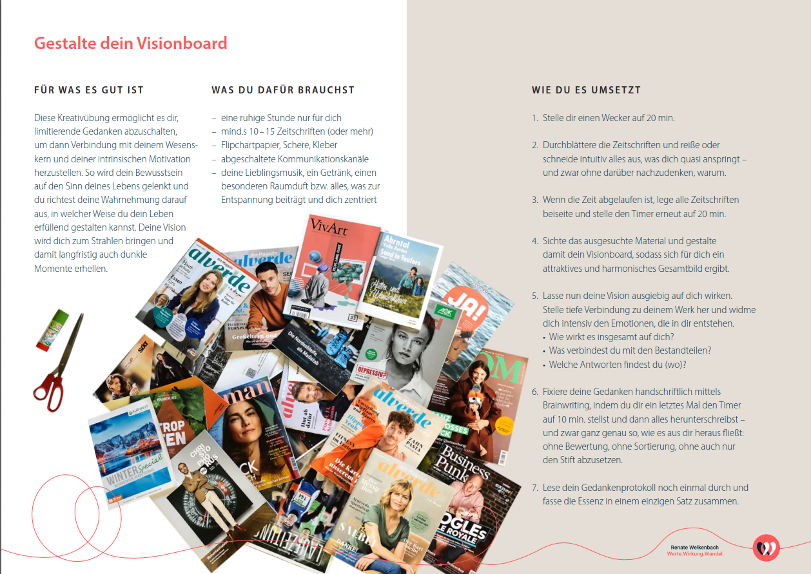

Dein eigener lernOS Leitfaden in einem Sprint
Version 1.0 (13.10.2022)
Dieser lernOS-Guide behandelt das Thema Leadership und ist für alle gedacht, die sich aus verschiedensten Perspektiven für das Themenfeld interessieren.
Das können ganz unterschiedliche Menschen sein, so bunt wie auch das Autor:innen-Team ist: Teamleiter:innen, Abteilungsleiter:innen, erfahrene und angehende Führungskräfte, Führungskräfte ohne disziplinarische Verantwortung, C-Level-Executives, Community Leads, Projektleiter:innen, Gründer:innen, Influencer:innen, Vereinsvorstände, Coaches und viele weitere Rollen rund um Leadership. Titel und Positionen machen noch keinen Leader aus.
Wäre es nicht toll, statt alleine für sich mit anderen Lernenden an einem eigenen Entwicklungsziel zu arbeiten und Woche für Woche ganz neue Perspektiven auf die eigene Führungsarbeit zu erhalten?
In den letzten Jahren hat sich der Begriff Leadership immer mehr in Organisationen durchgesetzt. Grund hierfür ist unter anderem ein zunehmend anderes Verständnis von Führung und Management. Es geht weniger darum, die Dinge richtig zu tun, als vielmehr darum, die richtigen Dinge zu tun. Konkret heißt das, Menschen zu entfalten und zu inspirieren. Und das gewinnt in einer sich rasch wandelnden Wirtschaftswelt an Bedeutung.
Was aber bedeutet Leadership? Es gibt keine einheitliche Definition, lediglich Gemeinsamkeiten, wie z. B. Verantwortung übernehmen, Vorbild sein, bestimmte Rollen erfüllen. Diese gängigen Definitionen bieten teilweise auch viel Raum für Interpretation: Für einige bedeutet Leadership Motivation, für andere ist es Synonym für Ergebnisse und für wieder andere handelt es sich um Inspiration. Meistens ist es mehr als ein Begriff, was zugleich die Komplexität von Führung/der Führungsaufgabe verdeutlicht. So wie die Arbeitswelt ständigen Veränderungen für Führungskräfte und Mitarbeiter:innen unterliegt, so ist auch das Verständnis des Leadership-Begriffs ständig im Wandel.
Wir erklären dir hier nicht, was Leadership genau bedeutet oder was echte Leader im Unternehmen oder anderen Bereichen auszeichnet. Vielmehr unterstützen wir dich mit diesem Leitfaden, dein ganz persönliches Verständnis von Leadership zu entwickeln und vor allem dich selbst weiterzuentwickeln. Dafür bieten wir dir eine Vielzahl an Denkanstößen, Übungen, Literatur- und Linktipps.
Noch ein paar Anmerkungen vorneweg: Dieser lernOS-Leadership-Lernpfad bezieht sich mit seinen Inhalten, Links und Hinweisen auf Deutschland. Bei Adaptionen für andere Länder und Übersetzungen in andere Sprachen solltest du das berücksichtigen und entsprechende Anpassungen vornehmen.
Zur Form der Ansprache
Dieser Guide richtet sich sowohl an Einzelpersonen als auch an Lern-Tandems und Gruppen bis zu fünf Personen. Der Einfachheit halber haben wir für die Ansprache durchgehend die Du-Form verwendet. Lediglich dort, wo es ausschließlich um Gruppenerklärungen geht, weichen wir davon ab.
Selbstverständlich verwenden wir eine geschlechtergerechte Sprache mit geschlechtsneutralen Formen oder dem Gender-Doppelpunkt. Wir möchten mittels des Gender-Doppelpunkts alle Geschlechter benennen – auch jene über die binäre Identität hinaus. Mehr Informationen zu gendergerechter Sprache gibt es auch hier: https://fairlanguage.com/
lernOS ist eine Methode zur Selbstorganisation für Menschen, die im 21. Jahrhundert leben und arbeiten. Um heute erfolgreich zu sein, muss man ständig lernen, sich organisieren und weiterentwickeln. Niemand sonst ist für diesen Prozess verantwortlich. Man muss sich selber darum kümmern (selbstgesteuertes, lebenslanges Lernen).
lernOS Leitfäden stehen unter der Lizenz Creative Commons Namensnennung 4.0 International (CC BY 4.0):
Du darfst:
Unter folgenden Bedingungen:
Das Verb „lernos” ist die Zukunftsform von „lernen” auf Esperanto (mi lernos = ich werde lernen, ni lernos = wir werden lernen). LernOS ist ein Betriebssystem für lebenslanges Lernen und lernende Organisationen. LernOS ist aber keine Software, sondern „Brainware”. Es ist eine Art zu denken und zu handeln, um als Einzelperson, Team oder Organisation im 21. Jahrhundert erfolgreich zu sein. Das großgeschriebene „OS” im Namen unterstreicht die Bedeutung der Digitalisierung für unsere vernetzte Wissensgesellschaft.
Zu lernOS gibt es drei grundlegende Leitfäden, die den Ansatz auf individueller Ebene (lernOS für dich), auf Ebene von Teams (lernOS für Teams) und auf Ebene von Organisationen (lernOS für Organisationen) beschreiben. Zusätzlich gibt es die lernOS-Toolbox, die oft genutzte Methoden und Werkzeuge erklärt (z.B. Podcast, Barcamp1, Sketchnoting2, Expert Debriefing3). LernOS ist nicht auf der sprichwörtlichen grünen Wiese entstanden, sondern eine Zusammenstellung von bereits bestehenden und bewährten Methoden. Alle lernOS-Leitfäden sind unter der offenen Lizenz Creative Commons Attribution (CC BY4) auf der lernOS-Webseite verfügbar und dürfen an die eigenen Bedürfnisse angepasst werden.
Wenn du weitere Fragen bezüglich lernOS hast oder Unterstützung von Gleichgesinnten brauchst, kannst du unter #lernOS auf Twitter schreiben. Beachte: Die Meisterschaft in lernOS ist eine Frage von Monaten oder Jahren, nicht von Stunden oder Tagen.
Also: Keep Calm & Learn On!
Wenn du dich 12 Wochen mit einem Thema beschäftigst, ist das gleichzeitig sehr viel und sehr wenig Zeit. Deine Lernreise ist in 12 Weeklys unterteilt. Das Weekly ist der wöchentliche Termin, den du dir bzw. den ihr in der Gruppe oder im Tandem zusammen festlegt.
Dieser Lernpfad enthält
Woche für Woche eine genaue Anleitung, die dich durch deine Lernreise führt – mit Denkanstößen, Tipps und wichtigen Leitfragen
mehr als 15 Übungen - wir bezeichnen sie als Katas - die dir dabei helfen, das Beste aus dir und deiner Lernreise herauszuholen
weiterführende Literatur und Links, um deine Lernreise zu vertiefen oder fortzusetzen
ein Glossar, das dir die lernOS-spezifischen Fachbegriffe erklärt.
Wie ist dieser Lernpfad aufgebaut?
Du findest in diesem Leitfaden zunächst die Anleitungen für die 12-wöchige Lernreise. Daran schließt sich die Liste der Übungen, der Kata-Log, an.
Wie gehst du mit dem Lernpfad um?
Nimm dir vor Start der Lernreise (genannt: Sprint7) Zeit, den Aufbau unseres Leadership-Guides und die einzelnen Katas genauer anzuschauen. Manchmal gibt es mehrere Katas in einer Woche. Für deine Reise gibt es immer eine Kata-Empfehlung. Wenn Du tiefer einsteigen willst oder auch nach Lust und Laune: Nutze auch die ergänzenden Katas. Grundsätzlich gilt: Es gibt keine Kata-Polizei, d. h. tausche gerne Katas aus oder modifiziere sie, damit sie besser zu deinen Zielen passen (siehe lernOS-Leitfaden).
Lernen in der Gruppe, im Tandem oder allein?
Alle lernOS-Leitfäden sind so konzipiert, dass du sie alleine, im Tandem oder in einer Gruppe machen kannst. Wir empfehlen, die lernOS-Leadership-Lernreise als Gruppe zu starten. Der Austausch wird wertvolle Impulse und Perspektiven liefern. Eine Gruppengröße von 4-5 Personen hat sich bewährt.
Hinweis für Gruppenreisende:
Du möchtest gerne in einer Gruppe starten und suchst noch Mitreisende? Wenn du dich in sozialen Netzwerken wie Facebook, Instagram oder Twitter bewegst, kannst du dort in einem Post nach weiteren Interessierten fragen. Nutz dafür auch die Hashtags #lernOS und/oder #lernOSleadership. Du kannst die Autor:innen des Leitfadens taggen, so kann dein Post einfacher gesehen und weitergeleitet werden.
Außerdem kannst du den kostenlosen PeerFinder https://web.peerfinder.app/de ausprobieren. Der PeerFinder ist speziell dafür entwickelt worden, dass Lernzirkel8 zueinanderfinden können.
Hinweis für Alleinreisende:
Wenn du jedoch lieber allein reist, kannst du statt in den Austausch in die Selbstreflexion gehen. Doch auch für Alleinreisende gilt: Der Austausch unterstützt dich auf deinem Weg. Deshalb überleg dir jetzt schon, wem du von deinen Reiseerlebnissen und Erkenntnissen erzählen willst und wen du ansprechen möchtest, wenn du für eine Kata den Austausch mit jemand anderem brauchst.
Dein Zeitbedarf
Du brauchst Zeit, um dein Ziel zu erreichen: Wieviel, hängt von dir und deinem Ziel ab.
Wofür du noch Zeit brauchst:
Für die Weeklys/Circletreffen, die dich bei der Zielerreichung unterstützen. Dafür ist eine Stunde vorgesehen. Eine Ausnahme bildet die Woche 9. Dieser Termin kann möglicherweise länger dauern.
Für die individuelle Vorbereitung haben wir 30 min veranschlagt – > insbesondere, wenn du in einem Tandem oder in einer Gruppe lernst. > So arbeitest du im Stil der Flipped Classroom Methode.
Erläuterung:
Flipped Classroom bedeutet, dass ihr die Katas bzw. Übungen als “Hausaufgabe” vorbereitet. In jedem Weekly gibt es eine oder zwei Katas, die unter der Überschrift “Zur Vorbereitung” aufgeführt sind. Indem jedes Circle-Mitglied diese Katas als „Hausaufgabe” vorab bearbeitet, habt ihr im Weekly Zeit, die Ergebnisse zu besprechen. Es gibt aber auch immer wieder Katas, die gemeinsam während des Weeklys absolviert werden.
Bei den Katas gibt es oftmals eine Variante, die empfohlen wird, und eine Variante, die erlaubt tiefer in das Thema einzusteigen.
Es geht los! Deine lernOS-Leadership-Tour beginnt gleich mit dem ersten Circle- oder Tandem-Treffen oder dem ersten Termin mit dir selbst.
Es gibt unterschiedliche Typen von Reisenden. Reisen ist etwas Individuelles und alle haben ihre eigenen Vorstellungen davon. So ist es auch mit deiner lernOS-Leadership-Reise. Manche starten die lernOS-Reise und vertrauen darauf, dass die Reiseleitung einen guten Job gemacht hat, und lassen die einzelnen Wochen auf sich zukommen. Andere möchten die Etappenziele kennen und verstehen. Schau dir also den lernOS-Pfad an und beschäftige dich mit ihm – ganz so, wie es deinem Typ entspricht. Und lass dich nicht entmutigen, wenn du dir nicht auf alle Wochen einen Reim machen kannst. Die Etappenziele bauen aufeinander auf und die einzelnen Katas sind wichtig, um die nächsten Schritte nachzuvollziehen.
Kennst du schon deine Mitreisenden? Wenn nicht, dann ist heute Zeit dafür. Du wirst deine Circle-Partner:innen in den nächsten 12 Wochen mindestens 1 x wöchentlich sehen oder hören. Deshalb nutzt heute den Circle, um ein paar Dinge gemeinsam zu planen.
Hinweis für Alleinreisende:
Überleg dir jetzt schon, wem du von deinen Reiseerlebnissen und Erkenntnissen erzählen möchtest oder wen du dir vorstellen könntest, gelegentlich um Unterstützung zu bitten.
Wie du im Folgenden siehst, gibt es schon für die Woche 0 etwas vorzubereiten.
Als Vorbereitung für diese Woche
Kata 0.1.: Rucksack packen ...
Wenn Du Lust hast, thematisch noch tiefer einzusteigen: Kata 0.2 (lernOS-Canvas)
Im Weekly
Willkommen! Schön, dass du dabei bist! Denk einen Moment darüber nach, warum du dich auf diese Reise begeben hast. War es der Wunsch nach mehr? Eine Reaktion auf ein Ereignis bei der Arbeit oder in deinem Leben? Ob es sich nun um ein Streben oder eine Reaktion auf etwas handelt - nimm dir jetzt einen Moment Zeit, um deine persönlichen Gründe zu erfassen. Teil sie in der Vorstellungsrunde zusammen mit weiteren Informationen zu deiner Person: Wer bist du? Stell dich vor.
Wenn du allein reist, kannst du deine Gründe gerne mit einer vertrauten Person besprechen. Aber auch das Aufschreiben und die Reflexion für dich selbst sind oft schon sehr hilfreich.
Für die kommenden Wochen gilt es, ein Ziel zu definieren. Doch wie gelingt dies? Mit dem lernOS-Canvas – Kata 0.2
Der lernOS-Canvas dient der Zielschärfung. Er ist eine visuelle Checkliste und gibt dir Struktur für deine Lernreise. Er bewahrt vor blinden Flecken. (Falls du ihn auf Papier schreibst, lässt sich der Canvas durch den Einsatz von Haftnotizen leicht anpassen).
Falls du den Canvas noch nicht angeschaut hast, könnt ihr das jetzt tun. Klär jetzt deine Fragen, damit du den Canvas bis zur nächsten Woche ausfüllen kannst.
Was nimmst du dir bis nächste Woche vor?
In dieser Woche geht es darum, den Grundstein für die nächsten 12 Wochen zu legen. Kannst du alles auf einmal erreichen, was du im lernOS-Canvas herausgefunden hast, oder ist es sinnvoll, Teilziele zu identifizieren? Wichtig ist, dass du dein Ziel realistisch steckst und es in 12 Wochen erreichen kannst. Was willst du zum Thema Leadership am Ende des Lernpfads erreicht haben? Bei welchem Ziel können dich Menschen – z.B. aus deinem Lerncircle - untersützen?
Tipp:
Wenn du zum ersten Mal eine Lernreise in dieser Form machst, nimm dir nicht zu viel vor. Du wirst dein Ziel in den nächsten 4 Wochen immer wieder nachjustieren und verfeinern.
Als Vorbereitung für diese Woche
Kata 1.1: Standortbestimmung
Wenn Du Lust hast, thematisch noch tiefer einzusteigen: Kata 1.2 (Beziehungsliste)
Im Weekly
Wie geht es dir aktuell? Was hast du seit der letzten Woche erreicht?
Was ist deine Definition von Leadership?
Welches Ziel aus Kata 1 möchtest du mit den anderen teilen?
Warum machst du das?
Was inspiriert dich daran?
Was heißt es für dich, ein Ziel erreicht zu haben?
Wie feierst du, wenn du dein Ziel erreicht hast?
Hast du einen Termin mit dir selbst in den Kalender eingetragen?
Was nimmst du dir bis zur nächsten Woche vor?
Wenn sich dein Circle für das Prinzip Flipped Classroom entschieden hat, bei dem die Katas als Vorbereitung bearbeitet werden und im Weekly nur der Austausch darüber stattfindet, dann bearbeite im Vorfeld des nächsten Treffens die Kata aus Woche 2.
Tipp:
Wenn du mit Arbeitsweisen wie Working Out Loud9 (WOL) oder lernOS noch nicht vertraut bist, dann plane für dich sicherheitshalber ein wenig mehr Zeit ein.
So langsam geht sie los: deine ganz persönliche Leadership-Lernreise. In den letzten beiden Wochen hast du dich intensiv vorbereitet und damit auseinandergesetzt, warum du dich auf diese Reise begibst und was du mit lernOS anstrebst. Dabei hast du dir klare Ziele gesetzt und überlegt, was du brauchst, um die Lernreise erfolgreich zu meistern.
In dieser Woche geht es darum, dir selbst bewusst zu machen, aus welchem Blickwinkel du das Thema Leadership betrachtest. Wo startest du deine Reise? Welche Erfahrungen und Voraussetzungen bringst du schon mit, um dein Ziel zu erreichen, und wie gut kennst du dich? Und wie schaut dein Umfeld auf das Thema?
So gehst du sicher, dass du auf deiner Reise alle für dich wichtigen Aspekte im Blick hast. Diese Woche bietet dir auch die Möglichkeit, die gewählte Reiseroute anzupassen oder fehlende Aspekte zu ergänzen. Dann bist du für die folgenden Wochen gerüstet.
Als Vorbereitung
Kata 2.1: Deine Persönlichkeit und dein Profil
Wenn Du Lust hast, thematisch noch tiefer einzusteigen: Kata 2.2 (Führungsstile/Führungstypen)
Im Weekly
Was hast du seit dem letzten Lerntreffen gemacht? Wie sicher bist du mit der Zielsetzung? Gab es etwas, worüber du im Nachhinein gestolpert bist?
Teil deine Erfahrungen und Gedanken mit den anderen, wenn du magst.
Austausch über Kata 2.1 (40 min)
Check-out (10 min)
Was nehme ich aus der Runde heute für mich mit in die nächste Woche?
Was nehme ich mir bis zum nächsten Mal vor?
Brauche ich noch etwas aus der Runde bis zum nächsten Termin?
Nach sorgfältiger Vorbereitung, Planung und klarer Zielvorgabe für deinen Leadership-Sprint weißt du, wo es jetzt lang geht. Du bist mit gepacktem Rucksack auf dem Weg. In deiner Reisegruppe habt ihr die richtigen Tools für euch gepackt und eure Pläne ausgetauscht und verfeinert.
In der letzten Woche hast du noch einmal deine Erfahrungen und Voraussetzungen in einer Selbstreflexion bearbeitet und damit solltest du gut gerüstet sein. Und denk daran: Wo immer du bist, du bist meistens nicht allein, sondern in einem sozialen Gefüge.
Deshalb wirst du in dieser Woche einen genaueren Blick auf deine Umgebung und dein Team oder deine Organisation werfen. So wirst du dir darüber klar, welchen Einflüssen du unterliegst und welche Faktoren unter Umständen noch Auswirkungen haben. Es ist wichtig, den Blick zu heben, sich umzusehen und festzustellen: Welchen Effekt hat das Umfeld und in welcher Beziehung steht es zu mir?
Und wie steht mein Umfeld zum Thema Leadership? Muss ich noch etwas Wichtiges in Betracht ziehen? Wie ist die Großwetterlage und bin ich wetterfest? Möglicherweise hilft eine Regenjacke, damit der Regen besser ablaufen kann. Oder reicht ein Windbreaker? Welche Jacke hilft dir?
Als Vorbereitung
Kata 3.1: Deine Organisation & dein Team
Wenn Du Lust hast, thematisch noch tiefer einzusteigen: Kata 3.2 (Reflexion Soziogramm)
Im Weekly
Wie geht es dir und den anderen? Läuft alles nach Plan oder gibt es Überraschendes, erste Entdeckungen, Hindernisse, Umwege oder gar Abkürzungen? Hört euch aufmerksam zu. Achtet darauf, welche Unterstützung jemand braucht.
Tausch dich über deine Ergebnisse mit den anderen in deinem Lernzirkel aus. Nimm die Ergebnisse der anderen als Inspiration für die nächsten Phasen mit auf. Vielleicht wollt ihr auch die Reflexionsfragen der Kata 3.2 nutzen.
Was nehme ich aus der Runde heute für mich mit in die nächste Woche? Welcher Schritt bringt mich nächste Woche näher an mein Ziel. Was macht mich wetterfest?
Plant den nächsten Termin.
In dieser Woche geht es darum, auf deiner Reise einen ersten Zwischenstopp zu machen und einen Ausblick auf deine weitere Route zu bekommen.
Zwischenstopp: Reflektier die ersten Wochen des Leadership-Lernpfads. Was hast du ausprobiert, welche Erfahrungen hast du gemacht? Was hast du bislang über dich gelernt?
Ausblick: Überprüfe deine Zielsetzung hinsichtlich deiner Führungsrolle. Passen die in Woche 1 gesetzten Ziele noch oder möchtest du sie verändern? Welche Schwerpunkte möchtest du für dich setzen?
Als Vorbereitung
Kata 4.1: „Toffifee”-Retro
Wenn Du Lust hast, thematisch noch tiefer einzusteigen: Kata 4.2 (Reflexionsfragen) bzw. Kata 4.3 (Feedbackschleifen)
Im Weekly
Wann habe ich zum letzten Mal etwas zum ersten Mal gemacht?
Austausch über die Kata 4.1 (20 min)
Falls ihr noch tiefer einsteigen wollt und eure Zeit es hergibt, findet ihr weitere Reflexionsfragen in der Kata 4.2.
Wer mehr/anders machen will: Die Kata 4.3 lädt euch zu Feedbackschleifen ein. (25 min.)
Woran wirst du erkennen, dass du dich auf dein Ziel zu bewegst?
In den nächsten drei Wochen geht es darum, den Fokus auf deine Führungsrolle und die damit verbundenen Herausforderungen, Hindernisse und Potenziale zu legen. Du erkundest damit spannendes Terrain mit Aufs und Abs.
Wie einleitend dargestellt, wird Führung von uns dabei sehr breit verstanden - so vielfältig wie die Landschaften in unseren Breitengraden sein können.
Falls du dich in diesen Wochen mit anderen Führungskräften austauschst, wirst du sicher von deren Perspektiven und Erfahrungen profitieren
Als Vorbereitung
Kata 5.1: Deine Vorbilder
Wenn Du Lust hast, thematisch noch tiefer einzusteigen: Kata 5.2 (Führungsgrundsätze)
Im Weekly
Die Woche beginnt mit einer Runde Journaling, das heißt, du schreibst eine Minute lang auf, was dir jeweils zu den folgenden Fragen in den Sinn kommt. Journaling ist gut geeignet zum "Aufwärmen". Dein Geist wird damit auf die kommende Stunde vorbereitet.
Ich bin verantwortlich für ...
Mir ist als Führungskraft wichtig, dass ...
Ich schätze an Vorbildern, dass ...
Vorbilder beeinflussen unsere Führungsrolle bewusst und unbewusst, positiv und negativ. Bei Vorbildern suchen wir häufig nach Eigenschaften, bei denen wir selbst ein Defizit verspüren, oder nach Menschen, die in besonderer Weise Stärken vorleben.
Nehmt euch bitte während des Circles jeweils ca. vier Minuten Zeit und stellt eure Vorbilder laut Kata 5.1 vor.
Für die anschließende Reflexion können folgende Fragen hilfreich sein:
Was verbindet/unterscheidet eure Vorbilder?
Wer aus deinem Umfeld wäre ein gutes Vorbild für jemand anderen im Circle?
Wen würdest du gerne näher kennenlernen? Wie wäre dies möglich?
Ein wichtiger Aspekt von Führung ist, den Mitarbeiter:innen und Kolleg:innen transparent zu machen, nach welchen Grundsätzen du führst und was dich als Menschen ausmacht. Jeder tickt anders.
Nehmt euch bitte vorab die Zeit für die Kata und stellt sie euch in der zweiten Hälfte des heutigen Zirkels gegenseitig vor. Im Anschluss an die wechselseitigen Vorstellungen notier kurz, was du durch die Führungsgrundsätze der anderen gelernt hast, und was du dir vorstellen könntest, selbst zu nutzen.
Nimm dir kurz Zeit zum Innehalten nach der heutigen intensiven Runde. Teil in einem Satz, was du vom heutigen Circle mitnimmst.
Nachdem du dich letzte Woche mit deinen Vorbildern beschäftigt hast, schaust du diese Woche aus der Metaperspektive auf dich, dein Team, dein Unternehmen und auf dein Ziel. Stell dir vor, du stehst auf einem Berg und blickst auf die Organisationslandschaft herunter.
Immer wieder werden Vorstellungen an uns herangetragen, was „gute Führung” bedeutet, welche Leadership-Kompetenzen jetzt angesagt sind, wohin sich Unternehmen heutzutage entwickeln müssen.
In dieser Woche geht es darum,
weg von den Idealen hin zu einem besseren Verständnis der > Organisationskultur zu kommen.
die Metaperspektive einzunehmen. Wie sieht die Realität in deinem Unternehmen aus? Welche Werte prägen die Unternehmenskultur? Wie ticken deine Mitarbeiter? Was ist dir als Führungskraft oder in deiner Leadership-Rolle wichtig?
dich aus dem Abstand heraus zu fragen, vor welchen Herausforderungen du in der Praxis stehst und was das für dein lernOS-Ziel heißt.
Als Vorbereitung
Kata 6.1: Spiral Dynamics – dein Blick auf die Organisation
Wenn Du Lust hast, thematisch noch tiefer einzusteigen: Kata 6.2 (Blick auf dich und dein Team) bzw. Kata 6.3 (Blick auf dein Ziel)
Im Weekly
Wir sind oft sehr gut darin „Schwächen” oder „Entwicklungsbedarfe” zu identifizieren. Beim heutigen Check-in starten wir mit einem bewussten Blick auf die Stärken. Beantworte für dich selbst oder innerhalb deines Circles die folgenden Fragen:
Was schätzt du an deinem Unternehmen?
Was schätzt du besonders an deinen Mitarbeiter:innen?
Was schätzt du an dir als Führungskraft? – Berichte kurz, wo du in der letzten Woche eine deiner Stärken als Führungskraft / in deiner Rolle als Leader einsetzen konntest.
Mach dir/macht euch die Unterschiede zwischen den für euch relevanten Ebenen des Modells durch Praxisbeispiele bewusst. Wo ordnest du dich ein? Wo siehst du deine Organisation? Und entsteht daraus ein Spannungsfeld und/oder ein Führungsdilemma?
Die kommende Woche ist eine gute Woche zum Nachdenken. Du hast heute Möglichkeiten praktiziert, aus der Metaperspektive auf dich, dein Team, dein Unternehmen und auf dein Ziel zu schauen. Lass es wirken.
Was war heute deine wichtigste Erkenntnis? Gab es einen Aha-Moment?
Hinweis und Ausblick:
Es ist prima, wenn du durch die heutige Reflexion in deiner Zielstellung bestärkt wurdest. Genauso hilfreich ist es aber auch, wenn du ins Nachdenken gekommen bist, ob es notwendig ist, dein Ziel anzupassen und zu schärfen, oder wenn du dir über mögliche Hindernisse bewusst geworden bist, die deiner Zielstellung im Weg stehen. Mit diesen Erkenntnissen bist du gut vorbereitet für die nächste Woche, denn deine Lernreise geht weiter mit der Frage: Wie kommst du deinem Ziel näher?
Auch in dieser Woche fokussierst du dich auf deine Führungsrolle. In Woche fünf hast du die Dinge in den Blick genommen, die dir wichtig sind: Vorbilder zur Orientierung, deine Grundsätze und/oder deine Gebrauchsanweisung. In der letzten Woche hast du aus der Metaperspektive auf die Organisationskultur geschaut und dabei vermutlich auch kleine und größere Blockaden, Hürden und Hindernisse entdeckt, die dich als Führungskraft und in Bezug auf deine Ziele in ein Dilemma bringen. In dieser Woche geht es darum, einen Weg zu finden, mit diesen Hürden und Hindernissen umzugehen.
Als Vorbereitung
Kata 7.1: Circle of Influence
Wenn Du Lust hast, thematisch noch tiefer einzusteigen: Kata 7.2 (Reflexionsfragen zum Circle of Influence) und/oder 7.3 (Dank & Wertschätzung)
Im Weekly
Wie ging es dir bei der Wahrnehmung des „Führungsdilemmas”, das du in der letzten Woche identifiziert hast?
Erinnere dich noch einmal an all deine Reaktionen - auf der kognitiven, der emotionalen und auch auf der körperlichen Ebene. Welche Gedanken, Gefühle, Körperreaktionen sind dir aufgefallen: Was hast du gedacht, gefühlt, gespürt?
Teile diese Reaktionen im Circle oder schreib sie dir jetzt auf.
Hinweis:
Es ist wichtig, deine Führungsdilemmata einschließlich deiner Reaktionen zu kennen. Das versetzt dich in die Lage diese loszulassen, um dann vorwärtsdenken zu können.
Tauscht Euch zunächst kurz auf der Metaebene dazu aus, wie ihr bei der Kata vorgegangen seid. Hast du dich strukturiert von außen nach innen vorgearbeitet oder umgekehrt? Oder hast du erst deine Punkte gesammelt und sie dann den einzelnen Kreisen zugeordnet? Wie leicht oder schwer sind dir Sammlung und Zuordnung gefallen? Wie ging es dir mit dem Modell?
Nehmt euch dann Zeit und teilt einzelne Punkte aus eurem „Circle of Influence”. Das können die Punkte sein, die dir besonders wichtig sind; die, die gerade noch viel Aufmerksamkeit verschlingen; die, deren Zuordnung dir schwergefallen ist; oder die, die dich überrascht bzw. gefreut haben.
Anschließend widmet ihr euch dem „Ins-tun-kommen”. Überlege für die Bereiche Control & Influence: Was sind erste konkrete Schritte? Nimm dir aus dem Bereich Control zwei oder drei Dinge vor, die du in den nächsten 72 Stunden umgesetzt haben willst. Teile diese im Circle. Tipp: Für diese Aufgabe könnte die Kata 7.2 spannende Reflexionsfragen bieten.
Wenn du den Guide allein durchläufst: Wähl eine Vertrauensperson, der du innerhalb der nächsten 24 Stunden von deinen Überlegungen erzählst. Bereite deinen Kurzreport wie oben beschrieben vor.
Diskutiert abschließend noch folgenden Gedanken:
Manchmal verorten wir Ereignisse vorschnell im Bereich „Concern”: Eine Situation macht uns betroffen, sie beschäftigt uns gedanklich und bindet sowohl Aufmerksamkeit als auch Energie. Wir glauben, wir sind in der Situation ohnmächtig – ohne Macht. Manchmal können wir die Situation jedoch mit Hilfe anderer, auf die wir Einfluss nehmen können, verändern.
Wo hat sich in deinem Bereich „Concern” vielleicht ein Punkt versteckt, den du mit Unterstützung deines Circles oder deiner Vertrauensperson noch einmal neu bewerten kannst?
Nimm dir bitte kurz Zeit zum Innehalten. Bitte vervollständige den folgenden Satz: „Wenn ich aus meiner Führungsrolle auf meine Fähigkeit schaue, Dank & Wertschätzung zu zeigen, dann …”
PS: Du willst wissen, was dieser Check-out mit dem Circle of Influence zu tun hat? Dann riskier doch einen kurzen Blick in die Kata 7.3 …
In dieser Woche gibt es auf deiner Reise wieder einen Zwischenstopp und einen Ausblick auf deine weitere Route.
Zwischenstopp: Reflektier die letzten Wochen des Leadership-Lernpfads. Was hast du ausprobiert, welche Erfahrungen hast du gemacht? Was hast du über dich, deine Rolle und deine Organisation gelernt?
Ausblick: Überprüf deine Zielsetzung bezüglich deiner Führungsrolle. Wie hat sich dein Verständnis deiner Zielsetzung in den letzten Wochen verändert? Was bedeutet das für deine Ziele? Welche Schwerpunkte möchtest du für die letzten Wochen des Leadership-Lernpfads setzen?
Als Vorbereitung
Kata 8.1: Zweite Zwischenstopp
Kata 8.2: Bad in Anerkennung (wird durchgeführt im Weekly)
Wenn Du Lust hast, thematisch noch tiefer einzusteigen: Kata 8.3 (Deep dive Retrospektiven)
Im Weekly
Wenn deine Reise bis hierher in einem Zeitungsartikel verfasst, würde: Was wäre die Überschrift?
Austausch über Katas 8.1 (20 min)
Kata 8.2: Bad in Anerkennung (20 min)
Praktische Klärung für Woche 9 (5 min) In der Woche 9 werdet ihr euch gegenseitig bei Herausforderungen auf eurer Führungsreise helfen. Dafür braucht es allerdings etwas Zeit. Überlegt euch, ob ihr das Weekly für Woche 9 auf 90 min verlängern oder ob ihr euch darauf beschränken wollt, die Herausforderungen von nur 3 Teilnehmer:innen zu bearbeiten. Sowohl Hilfe bekommen als auch Hilfe geben ist lehrreich. Und oftmals habt ihr als Teilnehmer:innen ja auch ähnliche Herausforderungen.
Unter welches Motto stellst du die verbleibenden Wochen deiner Leadershipreise?
Wenn man auf einer Reise nicht weiterkommt, ist es oft hilfreich, sich die Unterstützung anderer zu holen. In dieser Woche kannst du daher nochmal die ganze Kraft der Gruppe oder deiner gewählten Unterstützer:innen nutzen. Dazu ist es wichtig, dass du dir genau überlegst, wobei du dir Unterstützung wünschst und wo der Kern deiner Herausforderung liegt.
Hinweis für Gruppen:
Wenn ihr euch nicht schon im Vorfeld verständigt habt – siehe Woche 8 - einigt euch jetzt, ob ihr es für diesen Termin/für euren kollegialen Austausch bei der normalen Zeit belassen möchtet, oder ob ihr den Termin verlängern wollt.
Als Vorbereitung
Kata 9.1: Aktuelle Problemstellung
Kata 9.2: Wise Crowds (wird durchgeführt im Weekly)
Im Weekly
Schalte deine Kamera aus. Schließ die Augen, oder richte den Blick nach unten auf einen neutralen Punkt. Erlaub dir einen Moment der Stille. Jede:r für sich. Komm bei dir an. Atme bewusst tief ein. Atme langsam aus. Frag dich selbst: „Was bewegt mich gerade?” und dann frag dich „Was ist mir jetzt (in diesem Circle) wichtig?” (2 min)
Mit dieser Kurzmeditation schaffst du es, bewusst in deinem Weekly anzukommen.
Hinweis:
Diese Übung kannst du jederzeit mit deinem Team oder für dich selbst wiederholen und so auch in den Arbeitsalltag mehr Achtsamkeit und Ruhe einbringen.
Austausch Kata 9.2: Wise Crowds (pro Person 15 min plus Pausen)
Check-out (5 min)
Wie hast du Wise Crowds erlebt? Ist es eine Methode, die du in deinen persönlichen Methodenkoffer übernehmen möchtest?
Weiter geht’s auf deiner Reise.
Du hast schon sehr viel erreicht! Du hast dir ein Bild gemacht über deine Rolle, Aufgaben und Verantwortung und dein Umfeld. Du kennst die ersten Quellen und Netzwerke und gehst sehr wahrscheinlich mit viel offeneren Augen zum Thema Leadership durch die Welt.
Nun ist es Zeit, all deine Erkenntnisse in einer Gebrauchsanweisung für dich zusammenzufassen.
Als Vorbereitung
Im Weekly
Nenne eine Sache über dich, die nicht in deinem Lebenslauf steht und für die anderen noch unbekannt ist.
Austausch über Kata 10.1 (45 min)
Check-out (5 min)
Reflektiert in den letzten Minuten eure Lernerfahrung in dieser Stunde.
Du hast dich auf eine Reise begeben und wahrscheinlich hast du bereits, während du unterwegs warst, Kolleg:innen, Freund:innen, Bekannten von deiner Reise berichtet. Du hast in den letzten Wochen einige Hürden genommen, einige Klippen umschifft und dich mit anderen Reisenden ausgetauscht – du hast einiges erreicht.
In dieser Woche ist die Frage an dich: Was, wem und in welcher Form möchtest du etwas weitergeben?
Als Vorbereitung
Im Weekly
Bitte beantworte folgende Fragen:
Welchen Aha-Moment möchtest du heute mit deinem Circle teilen?
Wo bist du diese Woche mit deinem Wissen sichtbar geworden?
Was hast du diese Woche für dein Netzwerk getan?
Austausch über Kata 11.1 (45 min)
Check-out (5 min)
Bitte ergänz folgende drei Satzanfänge:
Ich nehme heute mit, dass ...
Mein Energielevel ist jetzt bei…
Ich bin heute dankbar für …
Du hast dich auf den Weg gemacht und dich und deine Leadership-Fähigkeiten reflektiert und erweitert. Aber bist du auch schon am Ziel? Wie geht es weiter? Ist nach dem Circle vor dem Circle?
Als Vorbereitung
Im Weekly
Wie möchtest du/wie möchtet ihr den Abschluss der Lernreise feiern?
Austausch zur Kata 12.1 (20 min)
Austausch: Wie geht es weiter? Was nimmst du dir als Nächstes vor? (15 min)
Wow, du hast es geschafft und der Sprint ist vollendet. Herzlichen Glückwunsch!
Jetzt ist die Zeit, die Lernreise ausklingen zu lassen. Sprich mit anderen/mit den Mitgliedern deines Circles über den Zirkel und deine Erfahrungen in den letzten Wochen. Was hast du gelernt und was hat der Lernpfad mit dir gemacht? Wie hast du deine Ergebnisse veröffentlicht und welche Feedbacks hast du erhalten?
Empfehlung für Teilnehmer:innen eines Circles:
Wie kann es nach der gemeinsamen Lernreise weitergehen?
Einige Circle treffen sich über die 12 Wochen hinaus regelmäßig weiter. Dabei können bestimmte Themen aus dem Lernpfad nochmal vertieft oder andere Aspekte bearbeitet werden, oder es ergibt sich die Möglichkeit zur regelmäßigen kollegialen Beratung oder gegenseitiger Unterstützung bei Retrospektiven.
Bestimmt haben die Member deines Circles auch ganz eigene Vorstellungen, woran ihr weiterarbeiten wollt. Vielleicht bringt ihr Ideen aus eurem persönlichen Umfeld oder euren Organisationen ein und entwickelt daraus neue Projekte. Besprich mit ihnen auch, wie ihr mit den vorhandenen gemeinsamen Ressourcen weiter umgehen wollt.
Hinweis für Alleinreisende:
Überleg dir, ob und mit wem du deine persönlichen Erfahrungen und Erkenntnisse teilen möchtest. Das können nahestehende Personen in Familie und Freundeskreis sein, aber auch Personen aus deinem beruflichen Netzwerk. Sei dir außerdem bewusst, dass es eine großartige Leistung ist, dass du drangeblieben und in Woche 12 angekommen bist.
Dreht eine letzte Runde und sagt einander im Blitzlicht: Was habe ich von dir gelernt?
Kata für Gruppenreisende (Lernzirkel)
Eine Circle-Moderation kann hilfreich sein, um das Zeitmanagement einzuhalten und diszipliniert eure Ziele und Termine zu verfolgen. Sprecht darüber und entscheidet, ob ihr jemanden benennen wollt und welche Aufgaben die Person übernimmt bzw. nicht übernimmt.
Legt fest, wann, wo und wie ihr euch wöchentlich treffen wollt. Reserviert für jeden Termin jeweils 1 Stunde.
Überlegt, welche Tools ihr in euren Rucksack packt, um miteinander gut zu kommunizieren:
TEAMS, Skype, ZOOM, Webex, ...
WhatsApp, Signal, Telegram, Slack, mattermost
Besprecht, wie ihr zwischen den Terminen kommunizieren wollt (Telegram, WhatsApp, Signal, E-Mail, etc.).
Wie wollt ihr Informationen, Ergebnisse teilen? Vielleicht möchtet ihr OneNote oder ein digitales Whiteboard wie Miro, Conceptboard, Jamboard oder ein Padlet verwenden.
Vereinbart eine Zusammenarbeit nach dem Motto: „What happens in Vegas, stays in Vegas.” Das bedeutet, dass sich jedes Circle-Mitglied darauf verlassen kann, dass alles, was im Circle geschieht, nicht weitergetragen wird.
Tipp:
Wenn ihr eine Circle-Moderation habt, fällt es erfahrungsgemäß leichter, das Zeitmanagement einzuhalten und diszipliniert eure Ziele und Termine zu verfolgen. Ihr könnt euch in der Moderation abwechseln, falls nicht eine:r allein diese Aufgabe übernehmen will. Legt dann immer am Ende des Weeklys fest, wer nächste Woche die Moderation übernimmt.
Definiert Tag und Uhrzeit des wöchentlichen Treffens. Empfehlenswert ist, gleich einen Serientermin für 15-18 Wochen anzulegen. Sollte ein Termin ausfallen müssen, so könnt ihr das Treffen gleich entsprechend verschieben. Besprecht, unter welchen Bedingungen ihr einen Termin verschieben wollt.
Kata für Alleinreisende:
Was kannst du tun, um sicherzustellen, dass du deine Lernzeit auch wirklich einhältst?
Trage deine Lernzeit in deinem Kalender ein.
Wie organisierst du deine Lernzeit?
Wo sammelst du deine Ergebnisse?
Was sind deine primären Arbeitstools?
Zeichne dir ein Bild deines Ziels und häng es dir an eine gut sichtbare Stelle in deiner Wohnung auf. Schau es an und stell dir vor, wie es sich anfühlt, das Ziel erreicht zu haben.
Such dir Unterstützer:innen in deinem Umfeld, die dich zum Durchhalten motivieren können.
Überleg dir, welche Hindernisse oder Störfaktoren sich dir in den nächsten Wochen in den Weg stellen könnten, die dich davon abhalten, bis zum Ende des Circles dranzubleiben. Ergreif entsprechende Gegenmaßnahmen, um diese Hindernisse zu umgehen oder zu überwinden.
Tipp:
Wenn du dir eine Stunde pro Woche Zeit nimmst, um an dem Lernpfad zu arbeiten, reicht das üblicherweise aus. Es empfiehlt sich, gleich mehr als 13 Termine zu blocken. Falls du mal wegen Urlaubs oder einer anderen Sache nicht kannst, verschieben sich deine Aktivitäten gleich um eine Woche.
Gleichzeitig wird es auch nicht immer leicht werden, sich zu motivieren. Auch hier die Empfehlung, schon jetzt zu überlegen, was du tun kannst, wenn deine Motivation mal nicht so hoch sein sollte. Kannst du dich mit etwas belohnen für deine Disziplin? Hilft es dir, wenn du mit anderen über deine Fortschritte sprichst oder sie anders öffentlich machst, vielleicht über Twitter, LinkedIn oder ESN12 (Enterprise Social Network)?
Ein Canvas ist eine visuelle Struktur, die für die parallele Bearbeitung mehrerer Bereiche verwendet werden kann. Auf diese Weise dient ein Canvas als visuelle Checkliste. Er kann aber auch für das Erzählen komplexer Geschichten eingesetzt werden. Die Idee kam ursprünglich von Alex Osterwalder, der den Business Model Canvas entwickelt hat. Der lernOS-Canvas besitzt die gleiche Grundstruktur wie der Business Model Canvas, von dem inzwischen viele weitere Canvas-Varianten abgeleitet wurden. Doch die Benennungen der Bereiche wurden geändert, um sie den Arbeitsthemen von lernOS anzupassen.
Der lernOS-Canvas, der untenstehend abgebildet ist, kann von der lernOS-Webseite in verschiedenen Formaten heruntergeladen (z.B. PowerPoint, PDF, PNG) werden. https://cogneon.github.io/lernos-for-you/de/2-0-Lernpfade/
Um mit dem Canvas flexibel arbeiten zu können, solltest du am besten nicht direkt auf den Canvas schreiben, sondern Haftnotizen verwenden, die du frei platzieren kannst. Dafür sind sie da. (How to use the lern-OS-Canvas) Falls du digital arbeitest, kannst du dir einfach die Datei zweimal abspeichern, so hast du jederzeit eine unbearbeitete Variante parat.

Grafische Ansicht eines Canvas mit Aufteilung der Bereiche.
Der obere Teil des Canvas enthält ein Motivations- oder Mission Statement (unter „Zweck”, aber nur, wenn du eines hast) und die Nummer oder das Datum des Sprints. Im Bereich „Meine Ziele & Schlüsselergebnisse” werden die Ziele für den aktuellen Sprint dokumentiert. Die Bereiche „Meine Rollen”, „Meine Aktivitäten”, „Meine Projekte” und „Mein Wissen & Meine Fähigkeiten” können genutzt werden, um mögliche Ziele zu identifizieren. Die Bereiche „Meine Beziehungen” und „Meine sozialen Netzwerke” werden zur Identifikation von Personen verwendet, die bei der Zielerreichung unterstützen können. Vorhandene Ressourcen (z.B. Dokumente, Checklisten, Videos etc.) werden in „Meine Wissens-Werte” aufgeführt. Unter „Meine Ablageorte” können wertvolle Ressourcen notiert werden, um sie großzügig mit dem Netzwerk zu teilen.
Teil 1: Mein Leadershipverständnis
Wo startest du deine Reise? Wo stehst du jetzt?
Führ dir noch einmal die Ausführungen der vergangenen Woche vor Augen. Wieso hast du dich für den lernOS-Leadership-Lernpfad entschieden?
a. Was ist Leadership für dich? Wie definierst du Leadership für dich?
b. Formulier 5 Eigenschaften in Form von Hashtags, die diesen Begriff für dich persönlich am besten beschreiben. Welche Eigenschaften sind wichtig?
c. Recherchier zusätzlich im Internet mindestens 3 Definitionen von Leadership und vergleich sie mit deinen Hashtags. Gibt es hier Überraschungen oder Aha-Momente für dich?
Teil 2: Mein Ziel für die nächsten 12 Wochen der Leadershipreise
Formulier dein Ziel. Wo willst du hin? Welche Wegstrecke willst du in 12 Wochen zurückgelegt haben, vielleicht ist es auch ein Meilenstein auf einem längeren Weg.
Was willst du in den nächsten 12 Wochen erreichen? (siehe > Beschreibung im Anschluss) und woran merkst du, dass du dein Ziel > erreicht hast. Um das festzustellen, mach dein Ziel messbar, z.B. > nach der SMART10-Regel oder nach > OKR11.
(siehe Beschreibung im Glossar im Anschluss an diese Tabelle)
Tipp:
Stell dir folgende Fragen, um dein Ziel zu überprüfen:
Ist mir das Ziel wirklich wichtig? Wie wichtig ist es auf einer Skala
von 1 bis 10?
1= gar nicht wichtig / 10= sehr wichtig.
Kann ich es in den nächsten 12 Wochen erreichen?
Wie kann mir mein Netzwerk dabei helfen, mein Ziel zu erreichen? Welchen Nutzen könnte eine Erweiterung mit sich bringen? (vgl. auch Kata 1.2)
Leg dein Ziel für die nächsten 12 Wochen fest
In dieser Kata wählst du dein Ziel für den Sprint. Das Ziel kann bis zur 4. Woche weiter verfeinert werden. Danach ist das nicht mehr ratsam.
Was willst du in den nächsten zwölf Wochen erreichen? Wähl ein Ziel, das dir wirklich, wirklich wichtig ist und bei dem du im Sprint Fortschritte machen kannst. Bedenk dabei; Es ist nicht die allererste Priorität, dein Ziel vollständig zu erreichen. Im Fokus steht zu lernen, wie du mit Hilfe eines offenen Lern- und Arbeitsstils und der Entwicklung eines Netzwerks Ziele einfacher erreichst.
Meine Ziele für die nächsten 12 Wochen
Wähl ein Ziel für die nächsten 12 Wochen. Lass dich von diesen Fragen leiten, um zu testen, ob das Ziel für den Sprint geeignet ist: „Ist es mir wirklich, wirklich wichtig?“, „Kann ich es in 12 Wochen erreichen?” und „Kann mein Netzwerk helfen?” Wenn du Mühe hast, ein gutes Ziel zu finden, denke an Ziele, die mit deinen Rollen, Aktivitäten, Projekten zu tun haben.
Verwende z. B. die Methode Objective & Key Results (OKR), um dein Ziel genauer zu fassen. Schreib unten dein Ziel auf. Definier 2-4 Schlüsselergebnisse pro Ziel, um dir bei der Fortschrittskontrolle zu helfen. Du solltest die Schlüsselergebnisse auf einer Skala von 0,0-1,0 messen können. Um sich ehrgeizige Ziele zu setzen, gilt eine Fertigstellungsrate von 0,7 als Erfolg.
Ich will: (Ziel) ...
gemessen an (Schlüsselergebnisse):
1. ......
2. .….
3. .….
4. .…
Tipp:
Achte bei deiner Zielformulierung darauf, dass du dein Ziel nicht zu hoch ansetzt, damit du es in der gegebenen Zeit erreichen kannst.
Weitere Informationen:
Wikipedia-Artikel SMART Criteria (aufgerufen 25.11.21)
Video: How Google Sets Goals – OKRs mit Google-Ventures-Partner Rick Klau
Buch: Introduction to OKRs, von Christina Wodtke, O’Reilly Media Inc. 2016
Buch: The Beginner’s Guide To OKR, von Felipe Castro
Du hast dich in Kata 1.1 schon gefragt: Wie kann mir mein Netzwerk dabei helfen, mein Ziel zu erreichen? Welchen Nutzen könnte eine Erweiterung mit sich bringen?
Erstell eine Liste von mindestens zehn Personen, die mit deinen Zielen in Zusammenhang stehen. Wenn du die Leute nicht namentlich kennst, kannst du auch Rollen oder Beschreibungen auf die Liste setzen. Nutz deine Kontaktlisten oder sozialen Netzwerke, um mehr Personen zu finden:
1. .…
2. .…
3. .…
4. .…
5. ...
6. .…
7. .…
8. .…
9. .…
10.….
In dieser Woche stehen die Selbstreflexion und das gegenseitige Kennenlernen nochmals im Fokus. Was hat dich auf diese Lernreise gebracht?
Führ dir deine anfängliche Antwort noch einmal vor Augen. Was hat dich geleitet? Persönliche Erfahrungen, Veränderungen in deiner Rolle oder Funktion oder vielleicht sogar ein Erlebnis, das außerhalb dieses Kontextes liegt? Vielleicht gibt es auch keinen spezifischen Auslöser, sondern einfach nur Neugierde und den Wunsch, dass Thema genauer für dich zu beleuchten.
Studien belegen, dass unsere Erfahrungen und unser Selbstbild u.a. einen starken Einfluss darauf haben, wie wir auf die Welt blicken. Deshalb ist eine aktive Auseinandersetzung mit unserem Selbstbild und unseren „Schubladen” im Kopf unabdingbar. Nur so können wir erkennen, welche Perspektive wir womöglich ausblenden. Informationen, die in das eigene Schema passen, schenkt man mehr Aufmerksamkeit. Diese Woche soll dir helfen, dich von einer anderen Seite kennenzulernen.
Hierzu empfehlen wir dir einen Selbsttest durchzuführen. Es gibt sehr unterschiedliche, sogenannte Persönlichkeitstest. Vielleicht hattest du bereits die Möglichkeit, einen Test in deinem Unternehmen zu machen. Manchmal werden dazu Tests wie DISC, MBTI, Insights oder Big5 und stärkenbasierte Ansätze wie der CliftonStrengths-Test, auch bekannt als Strengthsfinder, im Unternehmen angewendet. Manche Tests werden auch als Xing Premium Goodie angeboten, wie der Big5 Test von Lync. Zu vielen gibt es auch kleinere Varianten als kostenlose Online-Selbsttests:
Kostenlose Empfehlungen für Tests findest du hier:
Hier geht es um Intuition.
Tipp:
Wenn ihr die Ergebnisse vergleichen wollt, könnt ihr euch auf einen Test einigen oder eure Erfahrungen mit unterschiedlichen Tests austauschen. Vielleicht kennt ihr noch weitere. Eine pragmatische Übersicht und Einschätzung findet ihr hier: https://intrinsify.de/persoenlichkeitstest-vergleich/#was-ist-ein-persoenlichkeitstest
Wie geht es dir mit dem Ergebnis? Was hast du über dich erfahren?
Sei versichert, dass kein Test der Welt ein abschließendes Urteil über dich darstellen kann. Kein Mensch lässt sich in Schubladen stecken, es geht eher darum, ein besseres Verständnis der eigenen Person zu bekommen. Es ist also vielmehr eine Standortbestimmung und Momentaufnahme, die viel Unbekanntes aufdecken kann oder Denkanstöße bietet. Beobachte deine Reaktion, wo findet das Ergebnis deine Zustimmung, wo ist Widerstand? Was könnte dahinterstecken?
Wenn du magst, tausch dich mit jemandem aus deiner Beziehungsliste oder deinem Lernzirkel aus. Teil, womit du dich wohlfühlst, es kann sehr spannend sein, dazu die Eindrücke der anderen zu hören.
Alternativ zu einem Onlinetest kannst du auch eine kleine analoge Standortbestimmung durchführen.
Hilfreich können dabei die nachfolgenden beispielhaften Typologisierungen sein:
Servant Leadership: https://de.wikipedia.org/wiki/Servant_Leadership#:~:text=Servant%20Leadership%20ist%20eine%20von,im%20Gegensatz%20zum%20beherrschenden%20F%C3%BChren.
Daniel Goleman:
Nach Kurt Lewin: https://de.wikipedia.org/wiki/F%C3%BChrungsstil#F%C3%BChrungsstile_(nach_Kurt_Lewin)
Weiterhin beliebt sind auch Konzepte wie Situational Leadership, Transactional versus Transformational Leadership oder weitere Führungsstile: https://de.wikipedia.org/wiki/F%C3%BChrungsstil
Nachdem du dich für eine Richtung entschieden hast, kannst du dir folgende Fragen beantworten. Nutz dazu die beispielhafte SWOT Analyse.
Beschreibe dich selbst in einem Führungstyp!
Welche Stärken helfen dir bei deinem Führungstyp?
Welche Risiken birgt dein Führungstyp?
Welche Entwicklungsfelder stellst du bei deinem Führungstypus an dir fest?
Was könnte dich bei deiner Entwicklung behindern?
Swot Analyse:
| Deine Stärken Deine Risiken |
Deine Entwicklungsfelder Deine Herausforderungen (Hindernisse)
Die erste Reiseetappe steht unter der Überschrift Selbstreflexion. Die nächste Reiseetappe ist dem Kontext gewidmet. Ein guter Zeitpunkt, um nochmal den lernOS-Canvas hervorzuholen und zu schauen, wie deine Reise bislang verlaufen ist. Musst du Anpassungen vornehmen? Bist du auf dem richtigen Weg?
Letzte Woche ging es darum, dich selbst besser einzuschätzen, deine Stärken und Eigenschaften herauszuarbeiten und zu reflektieren. Heute blickst du auf dein Umfeld; das kann dein Team oder deine gesamte Organisation sein. Den Umfang bestimmst du. Im Zuge der Standortbestimmung ist ein sogenanntes Soziogramm gut geeignet, Beziehungen sichtbar zu machen und zu reflektieren, in welchem sozialen Gefüge wir uns befinden.
So geht’s
Überleg dir zuerst, wie weit du den Kreis fasst. Geht es nur um dein Team bzw. deine Kollegen oder möchtest du die gesamte Organisation oder Teile davon abbilden? Oder alle, mit denen du zu tun hast?
Du kannst entweder Stift und Papier zur Hand nehmen oder Haftnotizen bzw. Kärtchen auf einem Blatt herumschieben. Damit kannst du flexibler gestalten.
Auf dem Soziogramm werden alle Beteiligten dargestellt. Zuerst malst du dich in die Mitte als Kreis. Ausgehend von dir gruppierst du je nach Nähe andere Kreise bzw. Menschen um dich herum und zeichnest Verbindungslinien: Je nach Beziehung, Sympathie und Antipathie, positiver oder negativer Verbindung zeichnest du starke oder schwache Linien – oder auch keine, wenn es keine solche gibt. Du kannst Symbole verwenden, die du auf die Linien legst - wie ein Herz oder einen Blitz, um die Beziehung zu charakterisieren. Beim Einziehen der Pfeile und Symbole sind Leitfragen sehr hilfreich.
Am besten einigt ihr euch auf eine kleine Legende.
Leitfragen zur Entwicklung des Soziogramms:
Wer hat für mich Vorbildfunktion? Was sind die Eigenschaften?
Von wem würde ich mich gerne führen lassen (und warum)?
Mit wem würde ich ohne Weiteres auf eine Expedition aufbrechen?
Mit wem möchte ich auf keinem Fall allein im Biwak sein?
Mit wem möchte ich ein persönliches Gespräch führen?
Auf wen könnte ich mich in einer heiklen Situation verlassen?
Beachte, dass es hier um eine Momentaufnahme einer Gruppen- oder Teamsituation geht. Spannend wird es, wenn du es nach einiger Zeit wiederholst und anschließend vergleichst.
In deinem Soziogramm werden alle Beteiligten dargestellt. Schau doch einmal dein Gefüge an. Folgende Fragen können deine Auswertung stützen.
Reflexionsfragen zur Auswertung:
Wie schätzt du die derzeitige Situation anhand deiner Darstellung oder Aufzeichnung ein?
Welche Erkenntnisse hast du und welche Schlüsse ziehst du daraus?
Was löst die Betrachtung bei dir aus?
Welche Haltungen begegnen dir in deinem Umfeld, z. B. in deiner Organisation?
Was bedeutet das für deine Reise?
Was musst du berücksichtigen? Welche Lösungsansätze, sofern benötigt, fallen dir ein?
Gibt es Stolpersteine, Tretminen oder Abkürzungen?
Nimm dir / nehmt euch 5 min Zeit für individuelle Reflexion zu den ersten Wochen deiner / eurer Leadership-Reise:
Was war die süße Schokolade? Was lief super?
Was war die harte Nuss, die zu knacken war? Welche Herausforderung gab es?
Was war das klebrige Karamell? Was habe ich gelernt?
In der Gruppe: Danach teilt ihr eure persönlichen Toffifee-Bestandteile in der Gruppe.
Lernziel:
Du teilst deine Erfahrungen mit der Gruppe.
Du bekommst Einblicke in die Erfahrungen der anderen Mitglieder und > erhältst daraus Anregungen für dich selbst.
Hinweis für Alleinreisende:
Wenn du nicht in einer Lerngruppe unterwegs bist, kannst du die Kata für dich selbst durchführen. Überleg dir, ob und mit wem du deine Erkenntnisse teilen möchtest.
Du hast dich in den letzten Wochen intensiv mit dir und deiner Persönlichkeit auseinandergesetzt. Reflektier diesen Prozess anhand der folgenden Fragen:
Was hast du über dich erfahren oder gelernt, was hat dich überrascht?
Welche Methoden hast du angewendet, von denen du auch in Zukunft noch profitieren möchtest? Wie kannst du diese Methoden am besten integrieren?
Welche Anregungen aus den letzten Wochen möchtest du weiterverfolgen und wie kannst du das tun?
Wie ist dein Fortschritt im Hinblick auf deine Ziele? Möchtest du deine Ziele anpassen oder dein lernOS-Canvas ergänzen?
Es ist völlig normal und ein Zeichen deiner Weiterentwicklung, wenn du das Bedürfnis hast, deine Ziele anzupassen.
Ob es um Veränderungen und Lernprozesse bei dir persönlich oder in einem Team geht - ohne Feedbackschleifen fehlen die Informationen dazu, ob es Fortschritte gibt, ob Maßnahmen den gewünschten Effekt haben, welche Maßnahmen effektiv sind. Nicht nur, dass das Lernen dadurch schwierig bis unmöglich wird, es ist möglicherweise auch sehr frustrierend, weil kein Fortschritt erkennbar ist.
Feedbackschleifen sind auch ein wesentlicher Bestandteil des wissenschaftlichen Ansatzes, bei dem zunächst Hypothesen aufgestellt werden, die dann in definierten Experimenten überprüft werden - das Ergebnis des Experiments ist also das Feedback.
Zunächst zu dir persönlich. Sieh dir nochmal deine Ziele und deinen Canvas an (sofern du damit gearbeitet hast). Überleg dir, was geeignete Feedbackschleifen sein könnten, um deinen Fortschritt erkennen zu können - je öfter (mit vertretbarem Aufwand natürlich), desto besser.
Woran würdest du erkennen (sehen, messen, greifen), dass du dein Ziel erreicht hast?
Woran erkennst du, dass du dich auf dein Ziel zubewegst?
Welches ist das nächste Experiment, das du starten möchtest? Welche Ergebnisse erwartest du und wie misst du, ob das Experiment erfolgreich war?
Wie viele Experimente möchtest du in den nächsten Wochen machen?
Auch für die Zusammenarbeit und Weiterentwicklung im Team oder in einer Organisation sind Feedbackschleifen wichtig. Dazu gibt es drei grundsätzliche Ansätze, die es sich zu verfolgen lohnt:
Der erste Ansatz bezieht sich auf den eigentlichen Sinn und Zweck des Teams: Wie gut erfüllt das Team den eigenen Daseinszweck? Wie erfolgreich ist die Umsetzung der Strategie? Hier geht es um klare Ergebnisfokussierung, unabhängig von den eingesetzten Methoden - oder anders formuliert: „Wichtig ist, was hinten rauskommt”.
Der zweite Ansatz bezieht sich auf die Organisation und den Fluss der zu erledigenden Arbeit im Team. Dazu könnten sich Messgrößen eignen wie etwa Durchlaufzeiten: Wenn die Bearbeitung eines Arbeitspakets angefangen wird, wie schnell wird es dann abgeschlossen? Ähnlich sieht es mit der Umsetzung von Veränderungen aus: Wenn sich eine Anforderung ändert, wie schnell ist diese Änderung dann umgesetzt? Welche Maßnahmen sind möglich, damit das bei der nächsten Änderung schneller geht? Wie viele Arbeitspakete vergleichbarer Größe werden in einer Woche fertiggestellt?
Und: Ist der Arbeitsprozess überhaupt transparent genug, um zu wissen, wo es gerade „hängt”, wo der größte Engpass ist? Falls ja: Sind Maßnahmen identifiziert worden, um diesen Engpass aufzulösen?
Hinweis:
Explizit zu warnen ist davor, die Auslastung der Teams als Metrik zu verwenden mit dem Ziel, diese Auslastung zu maximieren. Zur Begründung: Bei maximaler Auslastung hat man lediglich maximal beschäftigte Teams, es werden jedoch kaum noch Arbeitspakete fertig - ein mitunter als widersprüchlich erlebter Zusammenhang, der sich aber mathematisch beweisen lässt (Little’s Law https://de.wikipedia.org/wiki/Littles_Gesetz. Diese Erkenntnis führt z.B. zu einer der Grundpraktiken von Kanban: Limitiere die parallele Arbeit im System. Kanban Guide https://resources.kanban.university/kanban-guide/)
Der dritte Ansatz bezieht sich auf das Team und dessen Zusammenarbeit. Die gute Zusammenarbeit im Team dient dazu, komplexe Aufgaben effizient und effektiv zu lösen, daher ist es naheliegend, eben diese Zusammenarbeit im Blick zu behalten und zu verbessern. Da die Qualität der Zusammenarbeit von vielen Faktoren abhängt, können (und müssen) hier unterschiedliche Beobachtungspunkte genutzt werden.
In regelmäßigen Abständen schätzen Teammitglieder ein, wie sie die Zusammenarbeit im Projekt erleben. Bewährt haben sich auch Einschätzungen zu spezifischeren Aspekten wie psychologische Sicherheit oder Innovationskultur (z.B. „Es fällt mir leicht, im Team um Unterstützung für Probleme zu bitten.” - „Neue Ideen werden wohlwollend geprüft und ggf. weiterentwickelt oder umgesetzt.”).
Beobachtung der Zusammenarbeitskultur, z.B. Verteilung der Redezeit in Meetings, Verhältnis von problemorientierten (was ist schiefgegangen, wer ist schuld?) und lösungsorientierten (welche Optionen haben wir, was sind die nächsten Schritte?) Diskussionen.
Anzahl und Erfolgsquote von bewusst durchgeführten Experimenten,
die das Team aufsetzt, beispielsweise als Ergebnis von Retrospektiven
(Retrospektiven sind einer Werkzeug der lernenden Organisation. Dabei
ist es nicht das Ziel, dass alle Experimente erfolgreich sind - dann
sind es ja keine Experimente mehr. Es
geht vielmehr um einen möglichst großen Lerneffekt, daher sollten die
Experimente
so gestaltet sein, dass sie im Mittel in nicht mehr als 40-60% der Fälle
erfolgreich
sind. Mehr zum Thema Retrospektive erfährst du in der Woche 8).
Und nicht zuletzt lassen sich auch die typischen HR-Parameter nutzen wie die Entwicklung der Krankheitstage, der Abruf der Urlaubstage, die Nutzung von Fortbildungsangeboten etc.
Sehr wichtig ist es, diese Metriken oder Feedbackschleifen als Informationsquellen zu sehen und zu nutzen, um darauf basierend Verbesserungsideen zu entwickeln, statt sie als ein System zur Leistungsmessung einzusetzen. Menschen wissen typischerweise sehr gut, wann das passiert, und ändern ihr Verhalten entsprechend, so dass die Werte gut aussehen. Und dann hat man nicht nur keine verlässlichen Informationen zum tatsächlichen, wahren Zustand mehr, sondern wahrscheinlich sogar eine gestörte Zusammenarbeit. Diese Metriken sind also nur dann gute Informationsquellen, wenn sie nicht zur Leistungsbewertung genutzt werden.
In den folgenden Wochen wird es um deine Führungsrolle in der Organisation gehen. Nutz die Informationen über Feedbackschleifen auch, um in deiner Organisation Feedbackschleifen und Metriken zu etablieren, soweit es dir möglich ist.
[Diese Kata enthält Textauszüge mit Genehmigung der Autorin aus: Schröder, Dörte: Change-Management in Projekten: Komplexität gemeinsam bewältigen, in: Andreas Klein (Hrsg.), Projektcontrolling mit agilen Instrumenten, 1. Auflage, Freiburg 2021, S. 216-218]
Vorbilder für deine Rolle als Führungskraft kann es mannigfaltige geben: Du hast über eine interessante Persönlichkeit einen Artikel gelesen, du hast im Lauf deines Lebens Führungspersönlichkeiten unmittelbar kennen- und schätzen gelernt. Vorbilder können auch aus anderen Gebieten kommen, z. B. können es ebenso Sporttrainer wie Cartoonfiguren sein.
Ergänz bitte diese Liste mit mindestens drei und bis zu zehn Vorbildern für deine Rolle als Führungskraft:
1.
2.
3.
4.
5.
6.
7.
8.
9.
10.
Geh deine Vorbilder-Liste durch und beantworte die folgenden Fragen in Stichworten:
Welche Eigenschaften schätzt du an dem jeweiligen Vorbild?
Was ist ein Satz, den dir dein Vorbild in Bezug auf dein Ziel mitgeben würde?
Extra:
Ist eines deiner Vorbilder auf Twitter oder LinkedIn aktiv? Dann freut sie/er sich bestimmt, wenn sie/er davon erfährt, dass du sie/ihn schätzt! Schreib doch bitte einen kurzen Post wie z. B. "Ich bin dankbar @MeinVorbild zu kennen, die/der mich als Führungskraft inspiriert #lernOSleadership". Das Hashtag #lernOSleadership ist für uns wichtig, um die Aktivitäten zu verfolgen.
Das ist eine einfache kreative Übung.
Nimm dazu ein paar gebrauchte Zeitschriften und schneide die Titel und Bilder aus, die für deine Führungsgrundsätze stehen.
Erstell aus den Ausschnitten eine Collage, d. h. kleb die Schnipsel zu einem Gesamtbild auf einem A4-Blatt zusammen. Wichtig ist, dass das entstandene Bild für deine gelebten Führungsgrundsätze steht. Dieses Bild nimmst du zur Circle-Sitzung mit.
Alternativ kannst du auch eine Bildersuche im Internet durchführen und passende Bilder auswählen und mit stimmigen Überschriften auf einer Folie oder einem Whiteboard zusammenstellen.
Diese Übung kannst du mit der Aufgabenstellung „Wie erlebe ich die Führung in unserem Team?" auch mit deinem Team durchführen. So wirst du dir bewusst, wie deine Führung von deinen Mitarbeiter:innen erfahren wird, und welche für dich wichtigen Aspekte wie gut im gelebten Alltag sichtbar sind.
Dazu ist es ebenso hilfreich, die Führungsgrundsätze deiner Organisation zu checken und zu überlegen, welche Felder auf welche Weise von deinem gelebten Führungsstil abgedeckt werden und welche Einzigartigkeit du mit deiner Persönlichkeit in die Organisation einbringst.
Extra:
Wir würden uns sehr freuen, wenn du deine Führungsgrundsätze teilst, z. B. mit einem Beitrag bei Twitter oder LinkedIn. Einfach ein Bild deiner Collage mit einem passenden kurzen Text wie „Meine Reise geht weiter. Heute habe ich meine Führungsgrundsätze mit meinen Circle-Peers ausgetauscht. #lernOSleadership" einstellen.
Im Folgenden siehst du ein intuitiv erfassbares und doch komplexes Entwicklungsmodell für Menschen, Teams und Organisationen. Es basiert auf den Forschungsarbeiten von Clare Graves. Von Don E. Beck und Christopher C. Cowan wurde es anwenderfreundlicher formuliert und dadurch auch über akademische Kreise hinaus bekannt gemacht.
Mach dich mit den 8 Ebenen der Entwicklung vertraut. Nutz für einen Überblick sowohl die Grafik als auch die Tabelle. Bei diesem Überblick geht es nicht darum, das Modell im Detail zu verstehen. Wichtiger ist es, auf das Folgende zu achten: Mit welcher Ebene / welchen Ebenen gehst du in Resonanz, d. h. worauf und wie (positiv, negativ …) reagierst du?
Ein Entwicklungsmodell für Menschen, Teams und Organisationen

Grafik erstellt von Marianne Windelband und Johanna Zimmermann in Anlehnung an Don E. Beck und Christopher C. Cowan und auf Basis von Clare C. Graves
Erläuterungen zum Modell:
Menschen, Teams und Organisationen lassen sich nie nur auf eine > Entwicklungsstufe reduzieren. In jeder Entwicklungsstufe sind alle > Aspekte der vorherigen Entwicklungsstufen vorhanden.
Die Zuordnung muss dabei nicht eindeutig sein. Beispielsweise kann > man immer wieder beobachten, dass die proklamierten Werte einer > Organisation einer anderen Entwicklungsstufe zugeordnet werden > können als die (noch) gelebten Praktiken.
Auf den Ebenen 1-6 fällt es Menschen schwer die anderen Stufen respektvoll zusehen und anzuerkennen, erst ab Ebene 7 (Gelb) ist das Verständnis da, dass alle Stufen ihre Berechtigung haben.
Spiral Dynamics: Eine nähere Betrachtung der ersten 7 Entwicklungsstufen
Hinweis Simon: hier soll das Bild ./src/images/image6.emf eingebunden werden, EMF ist als Format aber nicht zulässig.
Tabelle basierend auf Don E. Beck, Christopher C. Cowan: Spiral Dynamics, 9te Auflage 2020, Zusammenstellung M. Windelband
Quellen und interessante Links:
Don E. Beck, Christopher C. Cowan: Spiral Dynamics - Leadership, Werte und Wandel - eine Landkarte für Business, Politik und Gesellschaft im 21. Jahrhundert, 9te Auflage 2020
Clare W. Graves homepage: http://www.clarewgraves.com/
Wer Inspiration sucht auf dem Weg zur “evolutionären Organisation”:
Frederic Laloux, Reinventing Organisations, München, 2017, Verlag Franz Vahlen.
Nutz gerne das Modell Spiral Dynamics, um mal einen anderen Blick auf dich und dein Team zu werfen. Folgende Fragen können deine Reflexion (und euren Austausch) lenken.
Überleg für dich und tauscht euch untereinander aus: Wo siehst du dich selbst, wo dein Team, wo deine Organisation?
Dazu hier einige Fragen zur Anregung:
Du in deiner Führungsrolle
Auf welcher Ebene bewegst du dich vorwiegend, z. B. weil es deine Aufgabe, dein Umfeld erfordert?
Gibt es einen Unterschied zwischen deinen Werten und Führungsidealen und deinem Handeln?
Gibt es eine andere Ebene, auf die du je nach Kontext springst oder z. B. auch in Stresssituationen zurückfällst?
Dein Team (Mitarbeiter:innen bzw. deine Peer-Group / deine Arbeitsgruppe / die Kolleg:innen)
Auf welchen Ebenen befinden sich deine Mitarbeiter:innen?
Gibt es Unterschiede zwischen einzelnen Mitarbeiter:innen?
Passt du dein Führungsverhalten an dein Gegenüber oder auch je nach Situation an?
Dein Unternehmen (bzw. die Organisation)
Welcher Entwicklungsstufe würdest du die Organisation / das Unternehmen, für das du arbeitest, zuordnen?
Welche Widersprüchlichkeiten erlebst du in der Organisation, z. B. zwischen den Unternehmenswerten und der Praxis oder zwischen Organisationseinheiten?
Zielt man im Unternehmen eher auf eine Verbesserung innerhalb der bestehenden Entwicklungsstufe oder gilt es eine neue Ebene zu erreichen?
Das Modell Spiral Dynamics kann auch helfen, eine andere Perspektive auf dein Ziel zu bekommen. Nutze dafür gerne folgende Reflexionsfragen. Ein Austausch kann dir helfen noch tiefer einzutauchen.
Nachdem du dich selbst, dein Team, deine Organisation reflektiert hast, betrachte nun dein lernOS-Ziel nochmal neu: Stell dir selbst die folgenden Fragen und tauscht euch untereinander über die folgenden beiden Fragen aus:
Frage 1: Wozu leistet dein lernOS-Ziel einen Beitrag?
Bringt es dich, dein Team oder die Organisation innerhalb der bestehenden Entwicklungsstufe voran?
Oder dient es der Weiterentwicklung hin zu einer neuen Ebene?
Oder gilt es, nochmal auf einer vorhergehenden Entwicklungsstufe anzusetzen? (z.B. wenn es um Teambuilding geht: „Das Nest des Stammes warmhalten”)
Hinweis:
Mach dir bewusst, es geht bei der eigenen Zielsetzung nicht um „höher, schneller, weiter”, sondern um das, was jetzt wichtig ist – mit deinem Ziel da anzusetzen, wo du, dein Team, deine Organisation stehen.
Frage 2: Vor welchen Herausforderungen stehst du in der Praxis und was bedeutet das für dein Ziel?
Hier einige Fragen zur Anregung:
Bist du durch die heutige Reflexion in deiner Zielstellung bestärkt worden?
Bist du durch die heutige Reflexion zu einer Zielschärfung angeregt worden?
Bist du durch die heutige Reflexion auf Hindernisse – bei dir selbst/auf Teamebene/auf der Organisationsebene - aufmerksam geworden, die deiner Zielstellung im Weg stehen?
Was kann dir helfen, absehbare Hindernisse und Blockaden zu überwinden? Gibt es jetzt konkret etwas, das du angehen kannst? Oder reicht es dir, wenn du mögliche Hindernisse und Blockaden in den nächsten Wochen im Rahmen deiner Lernreise nochmal anschaust – z. B. im Rahmen einer kollegialen Fallberatung mit der Methode “Wise Crowds” (siehe Kata 9.2: Wise Crowds (Liberating Structures).
Das Modell „Circle of Influence” von Stephen R. Covey kann uns helfen zu analysieren, welche Angelegenheiten wir beeinflussen können und welche nicht. Es unterstützt uns, noch besser, strukturierter und gezielter unsere Handlungsfähigkeit zu entwickeln.

Stephen R. Covey hat das Modell mit seinem Bestseller „Die 7 Wege zur Effektivität” populär gemacht. In Anlehnung an Covey stellen wir euch heute ein erweitertes Modell vor, bestehend aus drei Kreisen:
Der innere, kleinere Kreis, der sogenannte “Circle of Control”, beschreibt unseren unmittelbaren Einflussbereich – also all die Dinge, die wir direkt, eigenverantwortlich und proaktiv selbst beeinflussen und gestalten können. Im Mittelpunkt stehen unsere Kompetenzen und Ressourcen. Hier sagen wir: „Ich kann …”
In dem erweiterten Kreis, dem „Circle of Influence” liegen jene Dinge, für die wir (auch) die Unterstützung anderer brauchen. Im Mittelpunkt stehen unser Netzwerk sowie unsere Fähigkeit, andere zu motivieren und um Unterstützung zu bitten. Hier sagen wir: „Ich kann mit Hilfe anderer …”
Im äußeren Kreis, dem “Circle of Concern” befinden sich all die Dinge, die uns beeinflussen, die sich jedoch unserer Kontrolle entziehen. Hier sagen wir oft „MAN müsste, sollte, hätte …” Viel besser wäre es hier zu sagen: „Ich kann es nicht ändern …” Also gilt es: Die Dinge anzunehmen, so wie sie sind, sie zu akzeptieren, loszulassen.
Wie gestaltet sich, bezogen auf dein Leadership-Ziel, gerade dein „Circle of Influence”? Womit beschäftigst du dich gerade? Was liegt in deinen Bereichen „Control”, „Influence” und „Concern”? Schreib mindestens 10 Aspekte auf und ordne sie den drei Kreisen zu.
Gelingt es uns, unseren Fokus auf das Beeinflussbare zu lenken, fließt dorthin auch unsere Energie getreu dem Motto „Die Energie folgt der Aufmerksamkeit” bzw. „Where the focus goes, energy flows.” (Tony Robbins)
Wenn wir viel Aufmerksamkeit in den Bereich „Concern” investieren, steigt unser Stressempfinden. Wir verfallen in eine Opferhaltung und einen reaktiven Modus. Unsere Sorgen und Ängste lähmen uns. Dabei übersehen wir die Dinge, die wir selbst beeinflussen können. Unser Einflussbereich schrumpft und wir werden unzufrieden.
Im proaktiven Modus konzentrieren wir unsere Energie auf die Bereiche „Control” und „Influence” und damit auf unseren Einflussbereich. Wir fokussieren uns auf die Dinge, die wir in der Hand haben. Dadurch wächst der Bereich unseres Lebens, den wir selbstbestimmt gestalten können.
Stephen R. Covey formuliert es so: „I am not a product of my circumstances. I am a product of my decisions.”
Quelle:
Stephen R. Covey: Die 7 Wege zur Effektivität. Prinzipien für persönlichen und beruflichen Erfolg. GABAL Verlag GmbH, Offenbach, 2005, S. 94ff
Um die einzelnen Ebenen des Circle of Influence genauer zu beleuchten, helfen dir vielleicht folgende Reflexionsfragen. Pick dir die wertvollsten Fragen raus.
Control:
Was kann ich selbst tun? Wie kann ich selbst gestalten?
Welche Informationen kann ich mir selbst beschaffen?
Was kann ich zur Erreichung meines eigenen Ziels beitragen?
Wie sorge ich dafür, dass sich eine Situation verändert?
Mit welchen Maßnahmen kann ich ein Thema treiben, das mir wichtig ist?
Influence:
Wen kann ich um Unterstützung/Hilfe bitten?
Wer entscheidet über meine aktuellen Anliegen? Wer hat Zugang oder Einfluss auf diese Entscheider:innen?
Wie kann ich diese Personen erreichen und auf welche Weise aktivieren? Wo kann ich diesen Personen begegnen?
Wer kann mir dabei helfen, diese Personen zu identifizieren?
Wer kann mein Thema pushen/mich von meinen Sorgen entlasten/mich unterstützen?
Von wem und auf welchem Weg erhalte ich Feedback zu meinen Anliegen, Gedanken und Empfindungen?
Concern:
Welche Möglichkeiten sehe ich, unter diesen Bedingungen weiterzuarbeiten bzw. zu leben?
Wie kann ich mich mit den Gegebenheiten arrangieren, ohne mich zu verbiegen?
Wer kann mich bei der Suche nach Akzeptanz oder alternativen Lösungen unterstützen?
Was wäre, wenn ich die jetzige Situation mit einem Blick aus der Zukunft, z. B. in drei Jahren, betrachtete? Was hätte ich dann möglicherweise gelernt?
Was verbirgt sich hinter meinem derzeitigen Widerstand? Was würde passieren, wenn ich diesen überwinden würde? Wie kann ich die dahinter liegenden Bedürfnisse und Wünsche noch leben?
Die Reflexionsfragen sind inspiriert von folgenden Beiträgen:
Die Neigung, das Negative (wie den Bereich „Concern”) stärker wahrzunehmen als das Positive (wie die Bereiche „Influence” und „Control”), ist wissenschaftlich gut untersucht und scheint tief in unserer menschlichen Natur verwurzelt zu sein. Sie zu überwinden gelingt mit Aufmerksamkeit und durch Übung.
In seinen Büchern „Management 3.0” und „Management for Happiness” stellt Jürgen Appelo die Arbeit mit Kudo-Karten vor. Kudos stammt vom griechischen (Hinweis Simon: Sonderzeichen führte zu Fehler, prüfen) (kydos), was so viel wie Anerkennung, Ruhm, Ehre heißt. Die Kudo-Karten geben einem Team die Möglichkeit, einander hierarchieunabhängig und zwanglos gegenseitig Wertschätzung entgegenzubringen – und das in schriftlicher Form.
Sag mittels einer Kudo-Karte einfach mal Danke. Hast du keine zur Hand, tut es auch eine Postkarte oder eine schlichte Haftnotiz, der Inhalt zählt.
Wähl eine Kudo-Karte und schreib sie für einen Member deines Circles bzw. für deine Vertrauensperson. Vielleicht wollt ihr zur besseren Organisation auch „Namen ziehen” lassen. Lest einander eure Karten vor und/oder sendet euch einander die Karten im Anschluss an die Session zu.
Hier findest du die Karten zum Download und/oder Ausdrucken:
Idee: Stell die Karten doch auch deinem Team vor und zur Verfügung.
Weiterführende Links:
Du hast dich in den letzten Wochen intensiv mit dir und deiner Führungsrolle auseinandergesetzt. Reflektier diesen Prozess anhand der folgenden Fragen:
Was hat sich bis hierhin für dich verändert?
Was hast du über dich, deine Rolle und deine Organisation erfahren?
Welche Methoden und Anregungen aus den letzten Wochen möchtest du weiterverfolgen und wie kannst du das tun?
Wie ist dein Fortschritt im Hinblick auf deine Ziele? Was gilt es in den nächsten Wochen für dich zu tun?
Ihr seid jetzt schon einige Wochen gemeinsam auf dieser Reise und habt eure individuellen Rucksäcke mehr und mehr gefüllt. Dabei habt ihr euch auch untereinander besser kennengelernt. Es wird Zeit, das sichtbar(er) zu machen!
Eine Person der Gruppe dreht den Stuhl so, dass sie oder er mit dem Rücken zur Gruppe sitzt. Bei virtuellen Treffen schaltet die Person ihre Kamera und ihr Mikrofon aus. Die anderen Mitglieder sprechen 3-4 min lang über diese Person. Dabei dürfen sie nur anerkennende und positive Dinge erwähnen und nichts von dem Gesagten im Nachhinein entkräften.
Danach wechseln, so dass jedes Mitglied der Gruppe die Gelegenheit bekommt, in Anerkennung zu baden.
Hinweis für Alleinreisende:
Auch wenn du nicht in einer Lerngruppe unterwegs bist, kannst du dir Möglichkeiten suchen, diese Kata durchzuführen. Überlege dir, ob du diese Übung mit einem Team aus dem Arbeits- oder Hobbykontext durchführen möchtest. Du hast die Chance, dabei etwas Neues und Positives über dich zu erfahren, das dich vielleicht sogar überrascht, und gleichzeitig die Verbindungen in diesem Team zu stärken.
Diese Kata ist inspiriert von dieser Aktivität des Retromaten. https://retromat.org/de/?id=-34
Wer sich schon einmal mit Scrum13 oder anderen agilen Arbeitsmethoden beschäftigt oder sogar schon in einem Scrum-Team mitgearbeitet hat, hat Retrospektiven bereits kennengelernt. Nicht umsonst sind Retrospektiven ein Herzstück des agilen Arbeitens. Hier kommt das Grundprinzip Überprüfen und Anpassen (inspect and adapt) voll zum Tragen. Und: Retrospektiven lassen sich auch unabhängig von Scrum in praktisch jedem anderen Kontext mit Gewinn anwenden.
Was sind nun wesentliche Faktoren, damit Retrospektiven auch wirklich effektiv sein können?
Regelmäßigkeit statt Krisenmodus: Retrospektiven > sollten regelmäßig stattfinden, bei intensiv zusammenarbeitenden > Teams alle 1-4 Wochen. Das stellt sicher, dass sich Probleme nicht > zu lange ansammeln und sich entsprechende Emotionen nicht zu lange > aufstauen. Die Regelmäßigkeit ist außerdem ein sichtbares Zeichen > dafür, dass es gerade nicht um Krisenbewältigung geht, sondern > dass kontinuierliche Verbesserung das Ziel ist.
Alle Sichtweisen statt Dominanz einzelner Personen: Oft erlebt man in Meetings, dass eine früh und nachdrücklich geäußerte Meinung, vielleicht sogar von einer Führungskraft oder Machtperson, die Richtung des Meetings und damit auch das Ergebnis nachhaltig beeinflusst. In einer Retrospektive ist das explizit nicht gewünscht. Hier möchte man die Stimmen aller Beteiligten hören, möglichst ohne, dass diese initial von anderen beeinflusst werden. Diversität der Meinungen ist wichtig, um die blinden Flecken zu reduzieren und zu guten Lösungen zu kommen. Daher wird durch die Moderation sichergestellt, dass erst alle Sichtweisen gehört und gesehen werden, bevor das Team zu gemeinsamen Entscheidungen und nächsten Schritten kommt.
Lösungsorientierung statt Schuldzuweisung: > Retrospektiven haben immer einen lösungsorientierten Ansatz und > sind keine Instrumente, um nach Schuldigen zu suchen. Je nach > kultureller Prägung der Teammitglieder ist von der Moderation hier > eine gewisse Kompetenz gefragt, um diesen Fokus zu halten. In > diesem Zusammenhang verweisen wir auf die sog. Prime Directive > (siehe unten).
Konkrete kleine Schritte statt (zu) großer Lösungsideen: Bei jeder Retrospektive werden sehr konkrete Aktivitäten vereinbart, die für das Team einen positiven Effekt haben. Dabei liegt der Fokus vor allem auf der Umsetzbarkeit. Bei jeder Retrospektive nur kleine Schritte zu vereinbaren und umzusetzen, ist sehr viel tragfähiger als große Lösungen, die dann eventuell nicht realisiert werden (können). Die Regelmäßigkeit von Retrospektiven erlaubt auch explizit experimentelle Ansätze: Es werden kleine Maßnahmen für wenige Wochen ausprobiert, von denen sich die Teammitglieder Verbesserungen versprechen. Wenn diese den gewünschten Effekt haben, behält das Team sie bei, ansonsten wird etwas anderes probiert. Das nimmt allen Beteiligten auch den Druck, vorab die „richtige” Lösung finden zu müssen - was in vielen Fällen weder nötig noch hilfreich ist.
Prime Directive
Die sog. Prime Directive geht zurück auf Norman Kerth, der sie als eine Basis für Retrospektiven betrachtet. Sie lautet:
„Regardless of what we discover, we understand and truly believe that everyone did the best job they could, given what they knew at the time, their skills and abilities, the resources available, and the situation at hand.”
Zu Deutsch:
„Unabhängig davon, was wir entdecken werden, verstehen und glauben wir aufrichtig, dass jede Person in der gegebenen Situation ihr Bestes getan hat auf Grundlage ihres zur Verfügung stehenden Wissens, ihrer Ressourcen und ihrer individuellen Fähigkeiten.”
Retrospektiven sind manchmal emotional oder führen zu besonderen Durchbrüchen, fühlen sich in den meisten Fällen aber eher unspektakulär an – und das ist auch gut so. Schließlich geht es darum, die kontinuierliche Verbesserung und Veränderungsfähigkeit zu verankern. Wichtig bei der Durchführung einer Retrospektive ist in jedem Fall eine gute und vor allem unabhängige Moderation. Bewährt hat sich für die Moderation das von Esther Derby und Diana Larsen entwickelte 5-Phasen-Modell für Retrospektiven.
(Textauszug mit Genehmigung der Autorin aus: Schröder, Dörte: Change Management in Projekten: Komplexität gemeinsam bewältigen, in: Andreas Klein (Hrsg.), Projektcontrolling mit agilen Instrumenten, 1. Auflage, Freiburg 2021, S. 212-214)
Das 5-Phasen-Modell ist u. a. hier https://finding-marbles.com/retr-o-mat/was-ist-eine-agile-retrospektive/ kurz erklärt, außerdem enthält der Retromat https://retromat.org/de/ viele Moderationsideen für die jeweiligen Phasen.
Überleg dir, wie und in welcher Form du Retrospektiven in deiner Organisation oder deinem Team anwenden möchtest. Welche Vorteile erhoffst du dir? Wie kannst du die Einführung von Retrospektiven am sinnvollsten gestalten? Wenn du schon an Retrospektiven beteiligt bist als Teilnehmer:in oder Moderator:in: Welche Ansätze siehst du, um die Qualität der Retrospektiven weiter zu verbessern?
Auf einer Reise und in deinem Führungsalltag läuft nicht immer alles rund. Manchmal ist es schwierig, den richtigen Weg zu finden, oder wir geraten in Situationen, in denen es gut ist, andere um Hilfe zu bitten und Lösungsideen anzufragen. Dazu hast du in dieser Woche Gelegenheit. Überleg dir in der Vorbereitung zum nächsten Circle-Treffen, welche aktuelle Herausforderung oder Fragestellung dich in deiner Führungsrolle bewegt. Es können Themen sein, die du im Rahmen der Lernpfad-Reise entdeckt hast oder aus deinem täglichen Umfeld mitbringst.
Es kann sein, dass es dich ein wenig Mut kostet, dein Thema in die Gruppe zu tragen. Ganz sicher aber ist es eine Herausforderung, das Thema so konkret und mit wenigen Worten für andere auf den Punkt zu bringen.
Mach dir genügend Notizen, um deine Herausforderung den anderen Mitgliedern im nächsten Circle kurz (1-2 min) vorstellen zu können. Manchmal hilft es, eine kurze Visualisierung vorzubereiten.
Mögliche Fragen:
Worum geht es genau? (Thema, Kontext, Beteiligte)
Was ist aus deiner Sicht das Problem?
Was hast du bereits versucht?
Was möchtest du gerne erreichen?
Wobei wünschst du dir Unterstützung?
Als Gruppe oder Tandem:
Je nachdem, ob ihr euren Termin verlängert oder es bei eurer normalen Zeit belassen habt, müsst ihr euch einigen, wer Fälle vorstellt (jeder Fall braucht ca. 15 min).
Einigt euch, wer zuerst seinen Fall vorstellt und wer die Rolle des Timekeepers übernimmt.
Ablauf der kollegialen Fallberatung:
Eine Person schildert die Herausforderung. (1-2 min)
Die anderen Circle-Mitglieder gehen in die Rolle der Beratenden und richten ggf. Verständnisfragen an die fallgebende Person. (1-2 min)
Die Person, die den Fall bereitstellt, schaltet ihre Kamera aus, so dass den Berater:innen virtuell der Rücken zugewendet wird.
Die Beratenden entwickeln Ideen, Vorschläge und Ratschläge und diskutieren diese. (4-5 min)
Dann schaltet die fallgebende Person die Kamera wieder ein und teilt mit, was besonders wertvoll an dieser Beratung war. (1-2 min)
Hinweis:
Wenn du magst, mach dir Notizen, um Rückmeldungen der anderen auch nach der Beratung noch parat zu haben.
Für Gruppen: Durchlauft die Schritte so oft, bis jede:r von euch einmal dran war.
Hinweis:
Solltet ihr nicht mit allen Fällen durchkommen, könnt ihr einen zusätzlichen Termin einstellen, euren Circle verlängern oder diese Methode sehr gut in eurem Arbeitsalltag ausprobieren. Dazu empfiehlt sich als weitere Inspiration Liberating Structures - Introduction
Als Einzelreisende
Falls du den Pfad als Einzelperson durchführst, empfehlen wir dir eine oder mehrere Personen zu suchen, mit denen du den vorgestellten Prozess durchlaufen kannst. Je nachdem, welche Personen sich für dich stimmig anfühlen, kannst du Kolleg:innen, Freund:innen, deine Partner:in oder deine Familie um Unterstützung bitten.
Wenn du neu als Führungskraft ein Team übernimmst oder deine eigene Führungskraft die Stelle wechselt, wäre es doch großartig, wenn jede/r im neuen Umfeld wüsste, was dich antreibt bzw. nach welchen Grundsätzen du führst. Das Gleiche gilt für deinen eigenen Boss oder für deine Peers, die parallel zu dir Projekte, Organisationen oder Teams führen.
Die Gebrauchsanweisung für dich bietet ein paar wichtige Fragen zu deiner Art zu führen, deren Beantwortung deinen Mitarbeiter:innen und Kolleg:innen Klarheit bringt. Selbstverständlich musst du nicht alle Fragen beantworten. Wähl diejenigen aus, die für dich und dein Umfeld besonders relevant sind.
Dein Arbeits- und Führungsstil
Was kennzeichnet deinen Arbeits- und Führungsstil?
Was erwartest du von dir?
Was erwartest du von Menschen, die du führst?
Was ist für dich im Umgang mit Kund:innen oder Kolleg:innen ein absolutes No-go?
Deine Werte und dein Warum
Welche Werte sind dir wichtig?
Warum arbeitest du, was ist dein "Why"?
Deine bevorzugten Interaktions- und Kommunikationswege
Was ist dir in der Zusammenarbeit besonders wichtig?
Auf welche Weise sollte man mit dir kommunizieren?
Wann ist es am besten mit dir zu interagieren?
Wie fällst du Entscheidungen?
Welche Erwartungen stellst du an Input und Ergebnisse aus Treffen und Workshops?
Wie kommunizierst du bei welchen Belangen am liebsten?
Wie gibst du Feedback, wie erhältst du gerne Feedback?
Wie gehst du mit Konflikten um?
Deine Fallstricke & Lernkurven
Was macht dich wahnsinnig?
Welche Macken hast du oder was könnten andere bei dir missverstehen?
Woran wird der andere merken, dass du im Stress bist?
Wie gehst du mit eigenen und fremden Fehlern und Schwächen um?
Wie lernst du am liebsten?
Wie unterstützt du deine Mitarbeiter:innen, besser zu werden?
Die Fragen sind inspiriert von folgenden Beiträgen:
https://toolblog.de/2016/11/23/gibt-es-eine-gebrauchsanweisung-fuer-sie/
https://www.inc.com/the-build-network/to-make-your-management-style-clear-create-a-users-manual.html
https://www.sessionlab.com/blog/leadership-activities/#what-i-need-from-you
Falls du dich am Anfang entschieden hast, mit einem Canvas zu arbeiten oder dein Ziel in einer anderen Weise zu visualisieren, ist jetzt ein guter Zeitpunkt, um diese Visualisierung nochmal herauszuholen und genau anzuschauen.
Um diese Überlegungen vorzubereiten, geh folgende Fragen durch:
Mit Rückblick auf deine Reise und einem Blick auf deine Anfangsvisualisierung (Canvas/Board) beantworte für dich folgende Fragen:
Was fehlt dir noch, um dein Ziel bis zum Ende der Reise zu erreichen?
Welche sind die nächsten konkreten Schritte?
Was würde dich weiterbringen?
Wo brauchst du noch Unterstützung?
Gibt es etwas, das dich zurzeit sehr beschäftigt und evtl. daran hindern könnte, diese letzte Phase zu starten?
Setz dich bitte mit folgenden Aspekten auseinander und entscheide, in welcher Weise du deinen Reisebericht teilst. Überleg erste Antworten für dich, tausch dich dann mit deinen Circle-Mitgliedern aus und entwickelt gemeinsame Ideen.
Thema: Was lohnt es zu teilen?
Zielgruppe: Mit wem möchtest du es teilen?
Format und Kanal: In welcher Form möchtest du es teilen?
Hinweis:
Entscheide dich für ein konkretes Format (z. B. LinkedIn Post, Bericht im Team-Meeting, E-Mail an Kolleg:innen, Teilen der Erfahrung in einem Meetup u. a.). Bereite dieses Format direkt und gezielt vor, damit du von den anderen Circle-Mitgliedern konkretes Feedback erhältst.

Grafik und Beschreibung von Renate Welkenbach – besten Dank für diesen schönen Abschluss
Beck, Don E., Cowan, Christopher C.: Spiral Dynamics - Leadership, Werte und Wandel - Eine Landkarte für Business, Politik und Gesellschaft im 21. Jahrhundert, 9te Auflage 2020
Covey, Stephen R.: Die 7 Wege zur Effektivität. Prinzipien für persönlichen und beruflichen Erfolg. GABAL Verlag GmbH, Offenbach, 2005, S. 94ff
Laloux, Frederic: Reinventing Organisations, München, 2017, Verlag Franz Vahlen
Schröder, Dörte: Change-Management in Projekten: Komplexität gemeinsam bewältigen, in: Andreas Klein (Hrsg.), Projektcontrolling mit agilen Instrumenten, 1. Auflage, Freiburg 2021, S. 216-218
1Barcamp: Ein Barcamp ist ein offenes Veranstaltungsformat, auch Un-Konferenz oder Ad-hoc-Konferenz genannt. Inhalte und Ablauf der Tagung sind zu Beginn noch offen und werden erst vor Ort von den Teilnehmenden festgelegt. Weitere Informationen findest du hier: https://www.eventbrite.de/blog/barcamp-methode-definition-ablauf-regeln/#definition-barcamp-methode
2Sketchnoting: Der Begriff ist eine Zusammensetzung aus Sketch (Skizzen) und Note (Notizen) – also Notizen, die aus Text, Bild und Strukturen bestehen. Die Erstellung einer Sketchnote wird Sketchnoting genannt und oft als Alternative zur konventionellen Protokollführung genutzt. Weitere Informationen findest du hier: https://sketchnoting.net/
3Expert Debriefing: Eine Methode, die dazu dient Expert:innen-Wissen zu erfassen, zu strukturieren und so weiterhin (für das Unternehmen und/oder die Nachfolge) nutzbar zu machen. Es gibt sogar einen LernOS Guide dazu: https://cogneon.github.io/lernos-expert-debriefing/de/1-1-Geschichte-des-Expert-Debriefings/
4CC BY: Die Inhalte dieses Leitfadens stehen unter der offenen Creative Commons Lizenz CC BY und können frei weiterverwendet werden. Du darfst diesen Leitfaden
teilen - das Material in jedwedem Format oder Medium vervielfältigen > und weiterverbreiten
bearbeiten - das Material remixen, verändern und darauf aufbauen, und zwar für beliebige Zwecke, sogar kommerziell
unter folgenden Bedingungen:
Namensnennung: Du musst angemessene Urheber- und Rechteangaben machen, einen Link zur Lizenz beifügen und angeben, ob Änderungen vorgenommen wurden. Diese Angaben dürfen in jeder angemessenen Art und Weise gemacht werden, allerdings nicht so, dass der Eindruck entsteht, der/die Lizenzgebende unterstütze gerade dich oder deine Nutzung besonders.
Keine weiteren Einschränkungen: Du darfst keine zusätzlichen Klauseln oder technische Verfahren einsetzen, die anderen rechtlich irgendetwas untersagen, was die Lizenz erlaubt.
5Weekly: Das Weekly ist der wöchentliche Termin, den du dir bzw. den ihr in der Gruppe zusammen festlegt. Dieses Treffen kann entweder persönlich oder virtuell stattfinden.
6Kata: In jeder Woche werden zur Zielerreichung Übungen vorgeschlagen, diese heißen Katas.
7Sprint: lernOS wird in 13 Wochen praktiziert. Ähnlich wie bei Scrum, wird dieser Zeitraum als Sprint bezeichnet. Weitere Infos dazu gibt es auch hier: https://cogneon.github.io/lernos-for-you/de/1-3-Lebenslanges-Lernen-mit-lernOS/#lernos-sprints-neues-lernen-in-nur-13-wochen
8Learning Circle, Lernzirkel: Wenn du lernOS nicht alleine machen möchtest, kannst du dich in einer Gruppe von 4-5 Personen zusammenschließen. Diese Gruppe wird Learning Circle oder auf Deutsch Lernzirkel genannt. Weitere Informationen findest du hier: https://cogneon.github.io/lernos-for-you/de/1-3-lernOS-Circle/
9WOL Working Out Loud: WOL ist eine Selbstlern-Methode und auch eine Einstellung. Der Begriff wurde 2010 von Bryce Williams aufgegriffen und 2015 von John Stepper zu einer Methode weiterentwickelt. Weitere Infos dazu gibt es hier: https://de.wikipedia.org/wiki/Working_out_loud und hier: https://workingoutloud.com/de/home/
10SMART: SMART ist ein Akronym für Specific Measurable Achievable Reasonable Time Bound und hilft als Methode dabei, Ziele richtig zu formulieren und dann auch zu erreichen. Hier gibt es dazu mehr: https://www.roberthalf.de/unsere-zusammenarbeit/news-info-center/karriere-tipps/karriereentwicklung/smart-methode
11OKR: OKR steht für Objectives (Ziele) und Key Results (Erfolgsmessung). Mehr Informationen findest du hier: https://www.strategy-lab.com/wie-helfen-mir-objectives-key-results-aka-okr-bei-der-erreichung-meiner-ziele
12ESN: Enterprise Social Network - aus dem Englischen übersetzt, meint es das soziale Netzwerk oder auch Intranet von Unternehmen.
13Scrum: Rahmenwerk für die agile (Software-)Produktentwicklung.
Wenn Du diesen Leitfaden bis hierher nur gelesen hast, lernOS aber noch nicht aktiv umsetzt, dann solltest du jetzt damit beginnen! Mit lernOS zu starten, ist wirklich einfach. Hier noch einmal in Kurzform die fünf Schritte, die dir beim reibungslosen Start helfen werden:
Zeit einplanen: Definier das Quartal, indem du mit lernOS starten möchtest. Trag dir die Zeiten für das Weekly in den Kalender ein. Dieser regelmäßige Termin ist besonders wichtig, wenn du lernOS in einem Circle praktizierst.
Ziele und Schlüsselergebnisse definieren: Nutz Woche 0, um deine Ziele und messbaren Ergebnisse für den Sprint festzulegen. Wähl ein Ziel, das dir wirklich am Herzen liegt.
Einen Circle gründen: Such nach 3-4 Mitstreiter:innen, die im selben Quartal einen Sprint starten wollen. Wenn jemand schon in einem anderen Circle war, kann diese Person die Rolle der Circle-Moderation übernehmen.
Organisier das Weekly: Wenn du deine Circle-Member nicht kennst, trefft euch in Woche 0 am besten persönlich. Nutzt soziale Netzwerke oder Messenger, um zwischen den Treffen zu kommunizieren. Nutzt Videokonferenzen, um virtuelle Treffen zu organisieren.
Plan, Do, Learn, Repeat: Nutzt das letzte Weekly in der Woche 12, um die Ergebnisse und die Zusammenarbeit im Kreis zu reflektieren. Entscheidet, ob ihr einen weiteren Sprint gemeinsam durchlaufen wollt.
Keep Calm & Learn On!
LernOS Leadership ist mit Hilfe von vielen Menschen entstanden und aus unterschiedlichsten Quellen hervorgegangen. Es ist daher ein Gemeinschaftswerk. Die jeweiligen Bezugsquellen sind zum einen in den Weeklys5 (Wochenanleitungen) und Katas6 (Übungen) und zum anderen unter Ressourcen benannt.
Darüber hinaus möchten wir an dieser Stelle die Autor:innen vorstellen, die den Leitfaden entwickelt haben.
Vielen Dank an Simon Dückert für die inhaltliche, technische und moralische Unterstützung!
Geschrieben wurde der Leitfaden von: Felix Harling, Claudia Heitmann, Sara Parr, Giovanna Lo Presti, Pivi Scamperle, Dörte Schröder, Marianne Windelband, Johanna Zimmermann.